B4_flowkit · GPT-6 Astra · attempt RVN6w5p
Batch fk1 · job fk1_B_EXP23000279_rep1_230309_flowkit_gpt-6-astra · trial B_EXP23000279_rep1_230309_flowki__RVN6w5p. Long tool outputs are cut at 6,000 characters.
Score
0.40
0.40
Minutes
9.7
9.7
Agent cost
$4.07
$4.07
Steps
24
24
Screenshots / images
11
11
1
task prompt (instruction.md)
<environment_context> <cwd>/task</cwd> <shell>bash</shell> <current_date>2026-11-10</current_date> <timezone>Etc/UTC</timezone> <filesystem><workspace_roots><root>/task</root></workspace_roots><permission_profile type="disabled"><file_system type="unrestricted" /></permission_profile></filesystem> </environment_context>
2
user message
# Caspase-3/7 assay in WT vs PGRN-KO iPSC-derived neurons: plate acquired 09-Mar-2023
You are the analyst for this experiment: analyse the plate, answer the plan's question, and recommend the next step.
## Inputs (read-only)
| Path | Content |
|---|---|
| `/task/inputs/plan.md` | The scientist's notebook plan for this run: background, objective, materials, procedure, plate maps |
| `/task/inputs/plate_layout.csv` | One row per FCS file: `file, well, sample, genotype, treatment`. Values are the scientist's plate-map wording, from the plan's "Run flow" plate map (first row = A, second row = B) |
| `/task/inputs/raw/` | 18 FCS files (Attune NxT, FCS 3.1, acquired 09-Mar-2023) |
## Environment
- **Budget.** About 5 hours.
## Deliverables (all in `/task/outputs/`)
CSV files must be comma-separated, UTF-8, with a header row. Use the exact file names, column names and allowed values below.
### 1. `gates.xml`
- Your gating strategy as GatingML 2.0, written with `flowkit.export_gatingml` (see *Software*). It must load with `flowkit.parse_gating_xml("/task/outputs/gates.xml")`.
- Every population in `counts.csv` except `all_events` must be a gate in this file with exactly the same name.
- Re-applying the saved gates to the raw files must reproduce the counts in `counts.csv`.
### 2. `counts.csv`
Columns, in order: `file, well, population, role, parent, count, pct_of_parent`
- **One row per file × population**, for all 18 files and the same set of populations in every file.
- **The `all_events` row.** Each file has one row with `population` = `all_events`, `role` = `other`, `parent` = `none`, and `pct_of_parent` empty.
- **`role`** ∈ {`cells`, `singlets`, `live`, `marker_positive`, `other`}.
- `cells`: the main cell population on scatter.
- `singlets`: single cells.
- `live`: viable cells.
- `marker_positive`: the population carrying your primary readout.
- `other`: any other population.
- Each of `cells`, `singlets`, `live` and `marker_positive` must be assigned to exactly one population, the same one in every file.
- **`parent`**: the name of the parent population (`all_events` for the first gate).
- **`count`**: integer event count from FlowKit statistics.
- **`pct_of_parent`**: 100 × count / parent count.
### 3. `flags.csv`
Columns: `file, well, issue_type, evidence, decision`
- One row per file, for all 18 files. Flag any well whose data should not be used, with evidence.
- `issue_type` ∈ {`none`, `clog`, `ran_dry`, `too_few_events`, `saturation`, `bad_control`, `mislabel`, `other`}
- `decision` ∈ {`keep`, `keep_with_note`, `exclude`}
- `evidence` is required unless `issue_type` = `none`. It must cite at least one number measured from the data.
### 4. `condition_summary.csv`
Columns: `condition, wells, n_wells_used, mean, sd, metric_definition, normalisation_applied`
- **One row per condition.** You name the conditions. If you report more than one metric, give each condition–metric pair its own row with a unique `condition` name.
- **`wells`**: the plate wells used, separated by `;` (e.g. `A7;A8`).
- **`n_wells_used`**: integer.
- **`mean`**: number. **`sd`**: number, or empty when `n_wells_used` = 1.
- **`metric_definition`**: the metric in terms of your population names (numerator / denominator).
- **`normalisation_applied`**: `none`, or the exact formula you applied.
### 5. `figure.png`
The main result chart.
### 6. `report.md`
These headings, in this order:
1. `## Question`
2. `## Methods`
3. `## Results`
4. `## Conclusion`
5. `## Caveats`
6. `## Recommendation`
### 7. `answer.json`
```
{
"question": "<the question from the plan>",
"comparisons": [
{"comparison": "<name>", "a": "<condition from condition_summary.csv>", "b": "<condition from condition_summary.csv>",
"direction": "increase|decrease|no_clear_change", "magnitude": "<text with number>", "confidence": "high|medium|low"}
],
"overall_answer": "yes: ... | partial: ... | no: ...",
"assay_verdict": "fit_for_purpose|needs_optimisation|not_fit_for_purpose",
"next_action": "<one ACTION>",
"next_change": {"what": str, "from": str, "to": str, "why": str},
"excluded_wells": ["<wells with decision = exclude in flags.csv>"],
"caveats": ["..."]
}
```
Rules for `answer.json`:
- `comparisons` has at least 1 item. `a` and `b` must exactly match `condition` values in `condition_summary.csv`. `direction` describes b relative to a.
- `overall_answer` starts with `yes:`, `partial:` or `no:`.
- ACTION ∈ {`proceed_as_planned`, `repeat_unchanged`, `repeat_with_change`, `optimise_reagent_or_setting`, `change_treatment_or_timing`, `switch_assay`, `stop`}.
- `next_change`: the change you recommend, as an object: `what` (the step, reagent or condition to change), `from` (its value as run), `to` (the value you recommend) and `why`. Use empty strings if you recommend no change.
- `excluded_wells` must equal the set of wells marked `exclude` in `flags.csv`.
## Software (FlowKit version of this task)
- **Python 3 with FlowKit 1.2.3** (plus flowio, numpy, pandas, scipy, matplotlib, openpyxl) is installed. There is no graphical analysis program.
- **Load** each file with `flowkit.Sample(path)`. Build **one** `flowkit.GatingStrategy` for all wells, with `flowkit.Dimension` and `flowkit.gates.RectangleGate`, `PolygonGate` or `EllipsoidGate` (no quadrant or Boolean gates).
- **Gate names** must be valid XML IDs: letters, digits and underscores, starting with a letter (no spaces or `+`).
- **One gate per reported population**, named exactly as the population and nested under its parent population (the first population's gate sits at the root). A population's events are its own gate within its parent.
- **Compensation.** Your choice. Every gate dimension must state its `compensation_ref` (`"uncompensated"`, `"FCS"` for the file's own spillover matrix, or the id of a matrix you add to the strategy).
- **Channels.** FlowKit gate dimensions use the detector ID (`$PnN`, e.g. `BL1-A`), not the text label.
- **Transforms.** You may draw gates on transformed axes (for example `flowkit.transforms.LogicleTransform`, added with `add_transform` and referenced by `transformation_ref`).
- **Save** the strategy with `flowkit.export_gatingml(strategy, open("/task/outputs/gates.xml", "wb"))` and check that it reloads with `flowkit.parse_gating_xml`.
- **Counts.** `counts.csv` must be the counts these saved gates give on each file (`strategy.gate_sample(sample)`), with no per-well changes.
- **Looking at data.** Save plots as PNG files and open the image files to view them.
---
## How you work
You work in a **terminal** (bash, working directory `/task`).
- **Inputs** are in `/task/inputs/` (read-only). **Write every deliverable to `/task/outputs/`.** Only that folder is collected for grading.
- **Limits.** There is no limit on the number of actions; the only limit is the time budget above. Save `gates.xml` and your output files early and often.
3
agent
I’ll read the plan, inspect the raw event data and controls, then apply one gating strategy across all 18 files. I’ll save the gates, counts, quality checks and interpretation in `/task/outputs/`, and verify that the saved gates reproduce the counts.
tool call · exec
const r = await tools.exec_command({cmd:"pwd && rg --files -g 'AGENTS.md' -g '*' inputs | head -60","workdir":"/task","max_output_tokens":4000});text(r);
text(await tools.exec_command({cmd:"cat inputs/plan.md && cat inputs/plate_layout.csv","workdir":"/task","max_output_tokens":14000}));
text(ALL_TOOLS.filter(x=>/search|browse/.test(x.name+" "+x.description)).map(x=>({name:x.name,description:x.description.slice(0,200)})).slice(0,40));
tool output
Script completed
Wall time 0.1 seconds
Output:
{"chunk_id":"2fa992","wall_time_seconds":0.00000411,"exit_code":0,"original_token_count":279,"output":"/task\ninputs/plate_layout.csv\ninputs/plan.md\ninputs/raw/Caspase_WT_KO_optimization_caspase_Group_B4.fcs\ninputs/raw/Caspase_WT_KO_optimization_caspase_Group_B8.fcs\ninputs/raw/Caspase_WT_KO_optimization_caspase_Group_A9.fcs\ninputs/raw/Caspase_WT_KO_optimization_caspase_Group_A2.fcs\ninputs/raw/Caspase_WT_KO_optimization_caspase_Group_A12.fcs\ninputs/raw/Caspase_WT_KO_optimization_caspase_Group_A11.fcs\ninputs/raw/Caspase_WT_KO_optimization_caspase_Group_A10.fcs\ninputs/raw/Caspase_WT_KO_optimization_caspase_Group_B11.fcs\ninputs/raw/Caspase_WT_KO_optimization_caspase_Group_B12.fcs\ninputs/raw/Caspase_WT_KO_optimization_caspase_Group_B9.fcs\ninputs/raw/Caspase_WT_KO_optimization_caspase_Group_B10.fcs\ninputs/raw/Caspase_WT_KO_optimization_caspase_Group_B6.fcs\ninputs/raw/Caspase_WT_KO_optimization_caspase_Group_B2.fcs\ninputs/raw/Caspase_WT_KO_optimization_caspase_Group_B7.fcs\ninputs/raw/Caspase_WT_KO_optimization_caspase_Group_A6.fcs\ninputs/raw/Caspase_WT_KO_optimization_caspase_Group_A7.fcs\ninputs/raw/Caspase_WT_KO_optimization_caspase_Group_A8.fcs\ninputs/raw/Caspase_WT_KO_optimization_caspase_Group_A4.fcs\n"}
{"chunk_id":"6c130d","wall_time_seconds":0.00000286,"exit_code":0,"original_token_count":1204,"output":"# EXP23000279 | Caspase Assay in WT and PGRNKO iPSC Derived Neurons\n\nNotebook plan for the run acquired on 2023-03-09. This is the scientist's text as written, up to the start of this run's results.\n\n## DAY 2023-03-09\n\n### Background:\nLoss of function of PGRN has been shown to negatively impact neural cell health reflected by increased cell death and caspase activity.\nCaspases are important mediators of the cell death pathway (apoptosis). Caspases are a group of proteases that result in cleavage of protein substrates subsequently leading to cell disassembly. For the PGRN RNAswap program we will want to measure caspase activity in iPSC derived neurons before and after adding the PGRN RNAswap constructs to ensure that PGRN protein replacement is rescuing the health of neurons. Before testing if AAV-PGRN constructs help restore neural health I will test and optimize the assay on the neurons with no AAV.\n\n### Objective:\nFor first round of experiments will be optimizing the assay. The goal will be to determine if a difference in caspase activity is present in PGRNKOs compared to WT PGP1 neurons. Camptothsesin (topoisomerase inhibitor) will be added.\n\n### Materials:\n- Camptothecin\n- CellEvent Caspase 3/7 reagent\n- DMSO\n- Zombie NIR\n\n### Procedure:\n- Differentiate WT and PGRNKO iPSC into neurons\n- Once cells are sufficiently neuronal can run caspase assay.\n- Add camptothecin Follow plate maps below.\n\n| Dose | for 1 well |\n|---|---|\n| 10uM | 20uL of 250uM stock into 500uL media |\n| 5uM | 10uL of 250uM stock into 500uL media |\n| 2uM | 4uL of 250uM stock into 500uL media |\n| 1uM | 2uL of 250uM stock into 500uL media |\n| DMSO (no treatment controls) | 10uL into 500uL media |\n\n- Incubate with camptothecin for 4.5hrs\n\nWT plate map (as written):\n```\nWT DMSO | WT 5uM camptothecin | WT caspase stain only\nWT no treatment | WT 10uM camptothecin | WT caspase stain only\nWT 1uM camptothecin | WT no stain | WT L/D only\nWT 2uM camptothecin | WT no stain | WT L/D only\n```\n\nKO plate map (as written):\n```\nKO DMSO | KO 5uM camptothecin | KO caspase only\nKO no treatment | KO 10uM camptothecin | KO caspase only\nKO 1uM camptothecin | KO no stain | KO L/D only\nKO 2uM camptothecin | KO no stain | KO L/D only\n```\n\n5. Run flow\n\nFlow plate map (as written; the remaining rows of the table are empty):\n```\nWT no stain | WT no stain | WT caspase only | WT caspase only | WT L/D only | WT L/D only | WT 10uM camptothecin | WT 5uM camptothecin | WT 2uM camptothecin | WT 1uM camptothecin | WT DMSO | WT no treatment\nKO no stain | KO no stain | KO caspase only | KO caspase only | KO L/D only | KO L/D only | KO 10uM camptothecin | KO 5uM camptothecin | KO 2uM camptothecin | KO 1uM camptothecin | KO DMSO | KO no treatment\n```\n\n3. Run CellEvent flow assay\n- Aspirate media and wash with PBS\n- Add 150uL accutase incubate for 5-10min\n- Add 75uL FBS and collect into 96w round bottom plate\n- spin down 200xg for 5min\n- Add 200uL Zombie NIR at 1:500 (4mL PBS+ 8uL Zombie) Incubate for 10min\n- Spin down and remove Zombie stain\n- Add 200uL of Cell Event Caspase 3/7 Detection reagent (1:1000) in flow staining buffer. Incubate for 30min at 37C (4mL +4uL reagent)\n- Analyze the samples without fixing.\nfile,well,sample,genotype,treatment\nCaspase_WT_KO_optimization_caspase_Group_A2.fcs,A2,WT no stain,WT,no stain\nCaspase_WT_KO_optimization_caspase_Group_A4.fcs,A4,WT caspase only,WT,caspase only\nCaspase_WT_KO_optimization_caspase_Group_A6.fcs,A6,WT L/D only,WT,L/D only\nCaspase_WT_KO_optimization_caspase_Group_A7.fcs,A7,WT 10uM camptothecin,WT,10uM camptothecin\nCaspase_WT_KO_optimization_caspase_Group_A8.fcs,A8,WT 5uM camptothecin,WT,5uM camptothecin\nCaspase_WT_KO_optimization_caspase_Group_A9.fcs,A9,WT 2uM camptothecin,WT,2uM camptothecin\nCaspase_WT_KO_optimization_caspase_Group_A10.fcs,A10,WT 1uM camptothecin,WT,1uM camptothecin\nCaspase_WT_KO_optimization_caspase_Group_A11.fcs,A11,WT DMSO,WT,DMSO\nCaspase_WT_KO_optimization_caspase_Group_A12.fcs,A12,WT no treatment,WT,no treatment\nCaspase_WT_KO_optimization_caspase_Group_B2.fcs,B2,KO no stain,KO,no stain\nCaspase_WT_KO_optimization_caspase_Group_B4.fcs,B4,KO caspase only,KO,caspase only\nCaspase_WT_KO_optimization_caspase_Group_B6.fcs,B6,KO L/D only,KO,L/D only\nCaspase_WT_KO_optimization_caspase_Group_B7.fcs,B7,KO 10uM camptothecin,KO,10uM camptothecin\nCaspase_WT_KO_optimization_caspase_Group_B8.fcs,B8,KO 5uM camptothecin,KO,5uM camptothecin\nCaspase_WT_KO_optimization_caspase_Group_B9.fcs,B9
… [1,049 more characters not shown]tool call · exec
const results=await Promise.allSettled([
tools.exec_command({cmd:"for p in /AGENTS.md /task/AGENTS.md /task/inputs/AGENTS.md; do if [ -f \"$p\" ]; then cat \"$p\"; fi; done\npython - <<'PY'\nimport flowkit as fk,inspect,importlib.metadata\nfrom pathlib import Path\nprint('versions', {p:importlib.metadata.version(p) for p in ['flowkit','flowio','numpy','pandas']})\nfor obj in [fk.Sample, fk.Dimension, fk.GatingStrategy.gate_sample, fk.gates.RectangleGate, fk.gates.PolygonGate]: print(obj,inspect.signature(obj))\np=sorted(Path('/task/inputs/raw').glob('*.fcs'))[0]\ns=fk.Sample(str(p))\nprint('FILE',p,'EVENTS',s.event_count)\nprint('CHANNELS',s.channels.to_string(index=False))\nprint('METADATA',s.get_metadata())\nprint('METHODS',[x for x in dir(s) if not x.startswith('_')])\nPY","workdir":"/task","max_output_tokens":12000}),
tools.web__run({search_query:[{q:'site.thermofisher.com CellEvent Caspase 3/7 Green flow cytometry 1 µM 30 minutes apoptosis 488 530'},{q:'site.biolegend.com Zombie NIR 640 780 viability dye protocol titration'}],response_length:"long"})
]);for(let i=0;i<results.length;i++)text({i,...results[i]});
tool output
Script completed
Wall time 3.4 seconds
Output:
{"i":0,"status":"fulfilled","value":{"chunk_id":"531a97","wall_time_seconds":3.203241021,"exit_code":0,"original_token_count":1235,"output":"versions {'flowkit': '1.2.3', 'flowio': '1.3.0', 'numpy': '1.26.4', 'pandas': '2.3.3'}\n<class 'flowkit._models.sample.Sample'> (fcs_path_or_data, sample_id=None, filename_as_id=False, channel_labels=None, compensation=None, null_channel_list=None, ignore_offset_error=False, ignore_offset_discrepancy=False, use_header_offsets=False, cache_original_events=False, subsample=10000)\n<class 'flowkit._models.dimension.Dimension'> (dimension_id, compensation_ref='uncompensated', transformation_ref=None, range_min=None, range_max=None)\n<function GatingStrategy.gate_sample at 0x7f907515e700> (self, sample, cache_events=False, verbose=False)\n<class 'flowkit._models.gates._gates.RectangleGate'> (gate_name, dimensions, use_complement=False)\n<class 'flowkit._models.gates._gates.PolygonGate'> (gate_name, dimensions, vertices, use_complement=False)\nFILE /task/inputs/raw/Caspase_WT_KO_optimization_caspase_Group_A10.fcs EVENTS 552590\nCHANNELS channel_number pnn pns png pne pnr\n 1 Time Time 1.0 (0.0, 0.0) 67108864.0\n 2 FSC-A FSC-A 1.0 (0.0, 0.0) 1048576.0\n 3 SSC-A SSC-A 1.0 (0.0, 0.0) 1048576.0\n 4 BL1-A AAV-GFP-Caspase-A 1.0 (0.0, 0.0) 1048576.0\n 5 RL3-A LiveDead-Zombie NIR-A 1.0 (0.0, 0.0) 1048576.0\n 6 FSC-H FSC-H 1.0 (0.0, 0.0) 1048576.0\n 7 SSC-H SSC-H 1.0 (0.0, 0.0) 1048576.0\n 8 FSC-W FSC-W 1.0 (0.0, 0.0) 1024.0\n 9 SSC-W SSC-W 1.0 (0.0, 0.0) 1024.0\nMETADATA {'par': '9', 'tot': '552590', 'mode': 'L', 'datatype': 'F', 'byteord': '1,2,3,4', 'p1f': 'NA', 'p1l': 'NA', 'p1s': 'Time', 'p1v': 'NA', 'p1n': 'Time', 'p1b': '32', 'p1r': '67108864', 'p1e': '0,0', 'p2f': 'NA', 'p2l': '488', 'p2s': 'FSC-A', 'p2v': '30', 'p2n': 'FSC-A', 'p2b': '32', 'p2r': '1048576', 'p2e': '0,0', 'p3f': 'NA', 'p3l': '488', 'p3s': 'SSC-A', 'p3v': '300', 'p3n': 'SSC-A', 'p3b': '32', 'p3r': '1048576', 'p3e': '0,0', 'p4f': 'NA', 'p4l': '488', 'p4s': 'AAV-GFP-Caspase-A', 'p4v': '250', 'p4n': 'BL1-A', 'p4b': '32', 'p4r': '1048576', 'p4e': '0,0', 'p5f': 'NA', 'p5l': '640', 'p5s': 'LiveDead-Zombie NIR-A', 'p5v': '300', 'p5n': 'RL3-A', 'p5b': '32', 'p5r': '1048576', 'p5e': '0,0', 'p6f': 'NA', 'p6l': '488', 'p6s': 'FSC-H', 'p6v': '30', 'p6n': 'FSC-H', 'p6b': '32', 'p6r': '1048576', 'p6e': '0,0', 'p7f': 'NA', 'p7l': '488', 'p7s': 'SSC-H', 'p7v': '300', 'p7n': 'SSC-H', 'p7b': '32', 'p7r': '1048576', 'p7e': '0,0', 'p8f': 'NA', 'p8l': '488', 'p8s': 'FSC-W', 'p8v': '30', 'p8n': 'FSC-W', 'p8b': '32', 'p8r': '1024', 'p8e': '0,0', 'p9f': 'NA', 'p9l': '488', 'p9s': 'SSC-W', 'p9v': '300', 'p9n': 'SSC-W', 'p9b': '32', 'p9r': '1024', 'p9e': '0,0', 'cyt': '0A29009 Attune NxT Acoustic Focusing Cytometer (Lasers: BRV6Y)', 'sys': 'SEA11065ATTUNE Microsoft Windows 10 Enterprise LTSC', 'spillover': '2,BL1-A,RL3-A,1.000000,0.000000,0.000000,1.000000', 'btim': '15:20:56', 'cells': 'NA', 'com': 'NA', 'cytsn': '2AFC228071019', 'date': '09-Mar-2023', 'etim': '15:21:44', 'exp': 'NA', 'fil': 'A10.fcs', 'inst': 'NA', 'originality': 'Original', 'lost': '0', 'op': 'Jeff Huang', 'plateid': 'NA', 'platename': 'Caspase_WT_KO_optimization', 'proj': 'caspase', 'smno': 'Group', 'src': 'NA', 'timestep': '0.001', 'vol': '158000', 'wellid': 'A10', '#coincidentcount': '69063', '#flowrate': '200', '#laser1asf': '1.05', '#laser1color': 'Blue', '#laser1delay': '1100', '#laser2asf': '1.09', '#laser2color': 'Red', '#laser2delay': '1497', '#laser3asf': '0.89', '#laser3color': 'Violet', '#laser3delay': '717', '#laser4asf': '0.99', '#laser4color': 'Yellow', '#laser4delay': '304', '#laserconfig': 'BRV6Y', '#p1label': 'NA', '#p1target': 'NA', '#p4label': 'Caspase', '#p4target': 'AAV-GFP', '#p5label': 'Zombie NIR', '#p5target': 'LiveDead', '#ptdate': '09-Mar-2023', '#ptresult': 'Pass', '#tr1': 'OR_FSC,25000', '#widththreshold': '1000', '#winext': '0', 'hostid': 'SEA11065ATTUNE', 'begindata': '000000008192', 'enddata': '000019901431', 'nextdata': '000000000000', 'beginstext': '000000000000', 'endstext': '000000000000', 'beginanalysis': '000000000000', 'endanalysis': '000000000000'}\nMETHODS ['acquisition_date', 'apply_compensation', 'apply_transform', 'as_dataframe', 'channels', 'compensation', 'current_filename', 'event_count', 'export', 'filter_negative_scatter', 'flagged_indices', 'fluoro_indices', 'get_channel_events', 'get_channel_index', 'get_channel_number_by_label', 'get_events', 'get_index_sorted_locations', 'get_metadata', 'id', 'metadata', 'negative_scatter_indices', 'null_channels', 'original_filename', 'plot_channel', 'plot_contour', 'plot_histogram', 'plot_scatter', 'plot_scatter_matrix', 'pnn_labels', 'pns_labels', 'rename_channel', 'scatter_indices', 'set_flagged_events', 'subsample_events', 'subsample_indices', 'time_index', 'transform', 'version']\n"}}
{"i":1,"status":"fulfilled","value":"CellEvent Caspase-3/7 Green Flow Cytometry Assay Kit User Guide (Pub.No. MAN0007522 B.0) (https://documents.thermofisher.com/TFS-Assets/LSG/manuals/cellevent_caspase_3_7_grn_flow_cytometry_assay_kit_man.pdf)\nciteturn0search12 [wordlim: 200] Published: 4.3 years ago; **Stain cells with CellEvent™ Caspase-3/7 Green Flow Cytometry Assay Kit (continued)** ... ** During the final 5 minutes of staining, add 1 µL of the 1 mM SYTOX™ AADvanced™ Dead Cell Stain in DMSO to the appropriate samples and mix gently. ... ** Analyze the samples without washing or fixing, using 488-nm excitation and collecting fluorescence emission using a 530/30 bandpass filter or equivalent for CellEvent™ Caspase-3/7 Green Detection Reagent and a 690/50 bandpass filter or equivalent for SYTOX™ AADvanced™ Dead Cell Stain.\nWe recom
… [29,715 more characters not shown]tool call · exec
text(await tools.exec_command({cmd:"mkdir -p /task/outputs\npython - <<'PY'\nimport flowkit as fk,inspect\nprint(inspect.signature(fk.transforms.LogicleTransform))\nprint(inspect.signature(fk.transforms.AsinhTransform))\nprint(inspect.signature(fk.GatingStrategy.add_gate))\nprint(inspect.signature(fk.export_gatingml))\nprint(inspect.getsource(fk.Sample.get_events))\nPY","max_output_tokens":5000}));
text(await tools.apply_patch("*** Begin Patch\n*** Add File: /task/outputs/inspect_plate.py\n+\"\"\"Raw-data audit; input files are never modified.\"\"\"\n+from pathlib import Path\n+import json\n+import numpy as np\n+import pandas as pd\n+import matplotlib\n+matplotlib.use('Agg')\n+import matplotlib.pyplot as plt\n+from matplotlib.colors import LogNorm\n+import flowkit as fk\n+\n+OUT = Path('/task/outputs')\n+LAYOUT = pd.read_csv('/task/inputs/plate_layout.csv')\n+RNG = np.random.default_rng(20230309)\n+\n+def main():\n+ plots = {}\n+ for name in ['scatter', 'singlets', 'fluorescence', 'time', 'width']:\n+ fig, axs = plt.subplots(3, 6, figsize=(22, 11))\n+ plots[name] = fig, axs.ravel()\n+ audit, quantiles, metadata, rate_rows = [], [], {}, []\n+ for i, row in LAYOUT.iterrows():\n+ s = fk.Sample('/task/inputs/raw/' + row.file)\n+ e = s.get_events(source='raw')\n+ md = s.get_metadata()\n+ metadata[row.well] = md\n+ col = {c: e[:, j] for j, c in enumerate(s.pnn_labels)}\n+ t = col['Time']\n+ rec = dict(file=row.file, well=row.well, events=len(e), time_min=t.min(),\n+ time_max=t.max(), time_nonmonotonic=int(np.sum(np.diff(t) < 0)),\n+ time_max_gap=float(np.max(np.diff(t))),\n+ coincident=int(md.get('#coincidentcount', 0)),\n+ acquisition_start=md.get('btim'), acquisition_end=md.get('etim'),\n+ metadata_well=md.get('wellid'))\n+ for c in s.pnn_labels[1:]:\n+ x = col[c]\n+ upper = float(s.channels.set_index('pnn').loc[c, 'pnr'])\n+ rec[c + '_ceiling_pct'] = 100 * np.mean(x >= upper-1)\n+ rec[c + '_near_ceiling_pct'] = 100 * np.mean(x >= upper*.99)\n+ for q, v in zip([0, .01, .05, .25, .5, .75, .95, .99, 1], np.quantile(x, [0, .01, .05, .25, .5, .75, .95, .99, 1])):\n+ quantiles.append(dict(well=row.well, channel=c, quantile=q, value=v))\n+ audit.append(rec)\n+ idx = RNG.choice(len(e), min(50000, len(e)), replace=False)\n+ a, ss, h, w, bl, rl = [col[c][idx] for c in ['FSC-A', 'SSC-A', 'FSC-H', 'FSC-W', 'BL1-A', 'RL3-A']]\n+ title = f'{row.well}: {row[\"sample\"]}\\nn={len(e):,}'\n+ ax = plots['scatter'][1][i]\n+ ax.hist2d(np.log10(np.maximum(a, 1)), np.log10(np.maximum(ss, 1)), bins=110, range=[[3.8, 6.05], [1.5, 6.05]], norm=LogNorm(), cmap='viridis')\n+ ax.set(xlabel='log10 FSC-A', ylabel='log10 SSC-A', title=title)\n+ ax = plots['singlets'][1][i]\n+ ax.hist2d(a, h, bins=100, range=[[0, 6e5], [0, 6e5]], norm=LogNorm(), cmap='viridis')\n+ ax.set(xlabel='FSC-A', ylabel='FSC-H', title=title)\n+ ax = plots['width'][1][i]\n+ ax.hist2d(np.log10(np.maximum(a, 1)), w, bins=100, range=[[3.8, 6.05], [0, 300]], norm=LogNorm(), cmap='viridis')\n+ ax.set(xlabel='log10 FSC-A', ylabel='FSC-W', title=title)\n+ ax = plots['fluorescence'][1][i]\n+ ax.hist2d(np.arcsinh(bl/150), np.arcsinh(rl/150), bins=110, range=[[-1, 10], [-1, 10]], norm=LogNorm(), cmap='viridis')\n+ ax.set(xlabel='asinh(BL1-A/150)', ylabel='asinh(RL3-A/150)', title=title)\n+ ax = plots['time'][1][i]\n+ bins = np.arange(np.floor(t.min()), np.ceil(t.max()) + 1, 1.)\n+ if len(bins) < 3:\n+ bins = np.linspace(t.min(), t.max(), 31)\n+ n, edges = np.histogram(t, bins=bins)\n+ centers = (edges[:-1] + edges[1:])/2\n+ ax.plot(centers, n/np.diff(edges), color='black', lw=1)\n+ ax.set(xlabel='Time (s, FlowKit raw)', ylabel='Events / s', title=title)\n+ for lo, hi, count in zip(edges[:-1], edges[1:], n):\n+ m = (t >= lo) & (t < hi)\n+ rate_rows.append(dict(well=row.well, start=lo, end=hi, events=int(count),\n+ median_fsc=np.median(col['FSC-A'][m]) if m.any() else np.nan,\n+ median_bl1=np.median(col['BL1-A'][m]) if m.any() else np.nan,\n+ median_rl3=np.median(col['RL3-A'][m]) if m.any() else np.nan))\n+ for name, (fig, axs) in plots.items():\n+ fig.tight_layout()\n+ fig.savefig(OUT / f'qc_raw_{name}.png', dpi=150)\n+ plt.close(fig)\n+ pd.DataFrame(audit).to_csv(OUT/'raw_audit.csv', index=False)\n+ pd.DataFrame(quantiles).to_csv(OUT/'raw_quantiles.csv', index=False)\n+ pd.DataFrame(rate_rows).to_csv(OUT/'time_bins.csv', index=False)\n+ (OUT/'fcs_metadata.json').write_text(json.dumps(metadata, indent=2))\n+ print(pd.DataFrame(audit).to_string(index=False))\n+\n+if __name__ == '__main__':\n+ main()\n*** End Patch"));
text(await tools.exec_command({cmd:"python /task/outputs/inspect_plate.py","workdir":"/task","yield_time_ms":1000,"max_output_tokens":4000}));
tool output
Script completed
Wall time 2.2 seconds
Output:
{"chunk_id":"aecbec","wall_time_seconds":0.901401823,"exit_code":0,"original_token_count":452,"output":"(param_t, param_w, param_m, param_a)\n(param_t, param_m, param_a)\n(self, gate, gate_path, sample_id=None)\n(gating_strategy, file_handle, sample_id=None)\n def get_events(self, source='xform', subsample=False, event_mask=None):\n \"\"\"\n Returns a NumPy array of event data.\n\n Note: This method returns the array directly, not a copy of the array. Be careful if you\n are planning to modify returned event data, and make a copy of the array when appropriate.\n\n :param source: 'orig', 'raw', 'comp', 'xform' for whether the original (no gain applied),\n raw (orig + gain), compensated (raw + comp), or transformed (comp + xform) events will\n be returned\n :param subsample: Whether to return all events or just the subsampled\n events. Default is False (all events)\n :param event_mask: Filter Sample events by a given Boolean array (events marked\n True will be returned). Can be combined with the subsample option.\n :return: NumPy array of event data\n \"\"\"\n if source == 'xform':\n events = self._get_transformed_events()\n elif source == 'comp':\n events = self._get_comp_events()\n elif source == 'raw':\n events = self._get_raw_events()\n elif source == 'orig':\n events = self._get_orig_events()\n else:\n raise ValueError(\"source must be one of 'orig', 'raw', 'comp', or 'xform'\")\n \n if subsample:\n events = events[self.subsample_indices]\n\n # if event mask is given, subsample it too\n if event_mask is not None:\n event_mask = event_mask[self.subsample_indices]\n\n if event_mask is not None:\n events = events[event_mask]\n\n return events\n\n"}
{}
{"chunk_id":"6edb8c","wall_time_seconds":1.000650044,"session_id":65698,"original_token_count":0,"output":""}tool call · exec
text(await tools.write_stdin({session_id:65698,chars:"","yield_time_ms":1000,"max_output_tokens":5000}));
text(await tools.exec_command({cmd:"ls -lh /task/outputs","max_output_tokens":2000}));
tool output
Script completed
Wall time 5.0 seconds
Output:
{"chunk_id":"c6f3c8","wall_time_seconds":5.001357498,"session_id":65698,"original_token_count":0,"output":""}
{"chunk_id":"4a1b53","wall_time_seconds":0.000003955,"exit_code":0,"original_token_count":18,"output":"total 8.0K\n-rw-r--r-- 1 root root 4.4K Nov 10 17:09 inspect_plate.py\n"}tool call · exec
text(await tools.exec_command({cmd:"python - <<'PY'\nimport inspect,flowkit as fk\nprint(inspect.getsource(fk.gates.PolygonGate.apply))\nprint(inspect.getsource(fk._models.gating_results.GatingResults))\nPY","max_output_tokens":7000}));
text(await tools.web__run({open:[{ref_id:"https://documents.thermofisher.com/TFS-Assets/LSG/manuals/cellevent_caspase_3_7_grn_flow_cytometry_assay_kit_man.pdf"},{ref_id:"https://www.biolegend.com/en-us/products/zombie-nir-fixable-viability-kit-8657?displayInline=true&filename=Zombie+NIR%E2%84%A2+Fixable+Viability+Kit.pdf&leftRightMargin=15&pdf=true&topBottomMargin=15&v=20240924032357"}],response_length:"long"}));
text(await tools.write_stdin({session_id:65698,chars:"","yield_time_ms":1000,"max_output_tokens":5500}));
tool output
Script completed
Wall time 1.6 seconds
Output:
{"chunk_id":"833916","wall_time_seconds":0.90314229,"exit_code":0,"original_token_count":1831,"output":" def apply(self, df_events):\n \"\"\"\n Apply gate to events in given pandas DataFrame. The given DataFrame must have columns matching the\n Dimension IDs for the Dimension instances defined for the gate.\n\n :param df_events: pandas DataFrame with column labels matching Dimension IDs\n :return: NumPy array of boolean values for each event (True is inside gate)\n \"\"\"\n dim_ids_ordered = []\n for i, dim in enumerate(self.dimensions):\n if isinstance(dim, RatioDimension):\n dim_ids_ordered.append(dim.ratio_ref)\n else:\n dim_ids_ordered.append(dim.id)\n\n results = gating.points_in_polygon(\n np.array(self.vertices, dtype=np.float64),\n df_events[dim_ids_ordered].values # send a NumPy array and not a DataFrame\n )\n\n if self.use_complement:\n results = np.logical_not(results)\n\n return results\n\nclass GatingResults(object):\n \"\"\"\n A GatingResults instance is returned from the GatingStrategy `gate_samples` method\n as well as the Session `get_gating_results` method. End users will never create an\n instance of GatingResults directly, only via these GatingStrategy and Session\n methods. However, there are several GatingResults methods to retrieve the results.\n \"\"\"\n def __init__(self, results_dict, sample_id):\n self._raw_results = results_dict\n self._gate_lut = {}\n self.report = None\n self.sample_id = sample_id\n self._process_results()\n\n @staticmethod\n def _get_pd_result_dict(res_dict, gate_name):\n return {\n 'sample': res_dict['sample'],\n 'gate_path': res_dict['gate_path'],\n 'parent': res_dict['parent'],\n 'gate_name': gate_name,\n 'gate_type': res_dict['gate_type'],\n 'count': res_dict['count'],\n 'absolute_percent': res_dict['absolute_percent'],\n 'relative_percent': res_dict['relative_percent'],\n 'quadrant_parent': None\n }\n\n def _process_results(self):\n pd_list = []\n\n for (g_name, g_path), res in self._raw_results.items():\n if 'events' not in res:\n # it's a quad gate with sub-gates\n for sub_g_id, sub_res in res.items():\n pd_dict = self._get_pd_result_dict(sub_res, sub_g_id)\n pd_dict['quadrant_parent'] = g_name\n pd_list.append(pd_dict)\n if sub_g_id not in self._gate_lut:\n self._gate_lut[sub_g_id] = {\n 'paths': [g_path]\n }\n else:\n self._gate_lut[sub_g_id]['paths'].append(g_path)\n else:\n pd_list.append(self._get_pd_result_dict(res, g_name))\n if g_name not in self._gate_lut:\n self._gate_lut[g_name] = {\n 'paths': [g_path]\n }\n else:\n self._gate_lut[g_name]['paths'].append(g_path)\n\n df = pd.DataFrame(\n pd_list,\n columns=[\n 'sample',\n 'gate_path',\n 'gate_name',\n 'gate_type',\n 'quadrant_parent',\n 'parent',\n 'count',\n 'absolute_percent',\n 'relative_percent'\n ]\n )\n df['level'] = df.gate_path.map(lambda x: len(x) - 1)\n\n self.report = df.sort_values(['sample', 'level', 'gate_name'])\n\n def _filter_gate_report(self, gate_name, gate_path=None):\n results = self.report[(self.report['sample'] == self.sample_id) & (self.report['gate_name'] == gate_name)]\n\n if gate_path is not None:\n results = results[results.gate_path == gate_path]\n elif len(results) > 1:\n raise ValueError(\"Gate name %s is ambiguous, specify the full gate path\")\n\n return results\n\n def get_gate_membership(self, gate_name, gate_path=None):\n \"\"\"\n Retrieve a boolean array indicating gate membership for the events in the GatingResults sample.\n Note, the same gate ID may be found in multiple gate paths, i.e. the gate ID can be ambiguous.\n In this case, specify the full gate path to retrieve gate indices.\n\n :param gate_name: text string of a gate name\n :param gate_path: A tuple of ancestor gate IDs for the given gate ID. Alternatively, a string path delimited\n by forward slashes can also be given, e.g. ('/root/singlets/lymph/live')\n :return: NumPy boolean array (length of sample event count)\n \"\"\"\n gate_paths = self._gate_lut[gate_name]['paths']\n if len(gate_paths) > 1:\n if gate_path is None:\n raise ValueError(\"Gate name %s is ambiguous, specify the full gate path\")\n elif isinstance(gate_path, tuple):\n gate_path = \"/\".join(gate_path)\n else:\n gate_path = gate_paths[0]\n\n # need to check for quadrant gates, as they need to be handled differently\n gate_data = self.report[(self.report['sample'] == self.sample_id) & (self.report.gate_name == gate_name)]\n quad_parent_values = set(gate_data.quadrant_parent.to_list())\n\n if len(quad_parent_values) == 1 and None in quad_parent_values:\n # it's not a quadrant gate\n return self._raw_results[gate_name, gate_path]['events']\n elif len(quad_parent_values) == 1:\n quad_parent = quad_parent_values.pop()\n return self._raw_results[quad_parent, gate_path][gate
… [24,471 more characters not shown]tool call · exec
for(const p of ["qc_raw_scatter.png","qc_raw_singlets.png","qc_raw_fluorescence.png","qc_raw_time.png"]){image((await tools.view_image({path:"/task/outputs/"+p})).image_url);}
tool output
Script completed Wall time 0.1 seconds Output:
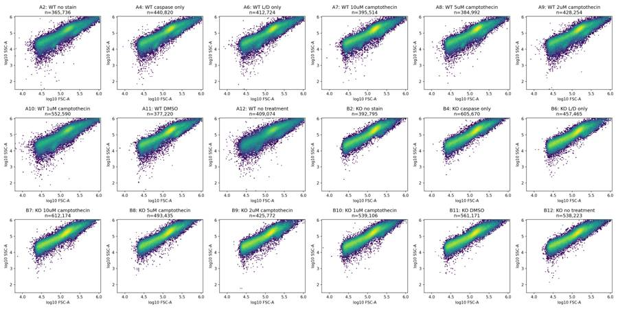
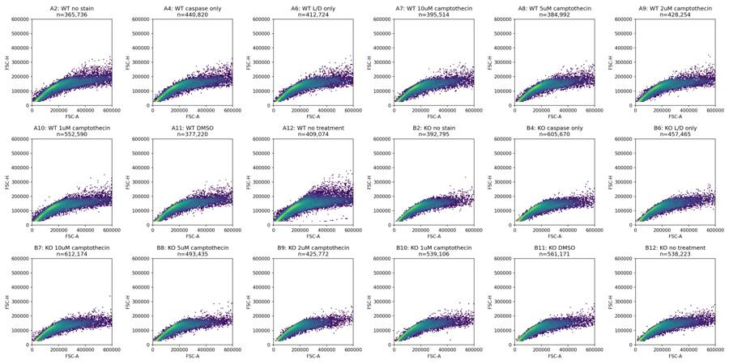
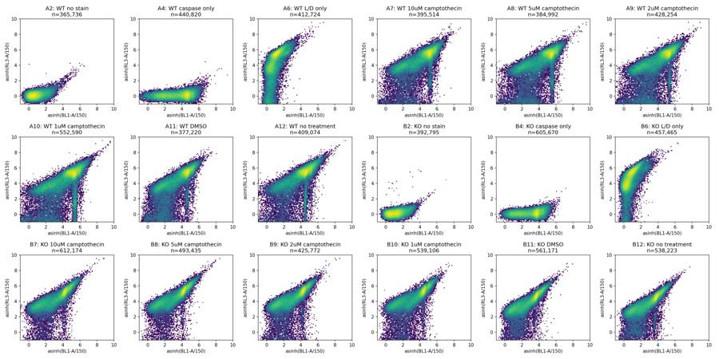
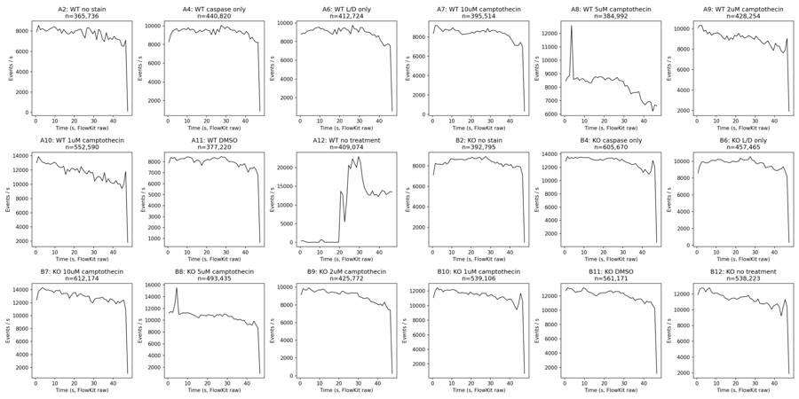
9
agent
The files match the plate map, and each contains hundreds of thousands of events. A12, the WT untreated well, has a major interruption in acquisition followed by a large rate surge; I’m checking it for exclusion. I’m also checking the staining controls before setting the live-cell and caspase thresholds, since those gates determine which comparison is interpretable.
tool call · exec
image((await tools.view_image({path:"/task/outputs/qc_raw_width.png"})).image_url);
text(await tools.exec_command({cmd:"python - <<'PY'\nimport pandas as pd\nq=pd.read_csv('/task/outputs/raw_quantiles.csv')\nprint(q[q.channel.isin(['FSC-W','SSC-W','RL3-A','BL1-A']) & q['quantile'].isin([.01,.25,.5,.75,.99])].pivot(index='well', columns=['channel','quantile'],values='value').round(1).to_string())\nt=pd.read_csv('/task/outputs/time_bins.csv')\nprint(t[t.well=='A12'].to_string(index=False))\nPY","max_output_tokens":5000}));
tool output
Script completed Wall time 0.4 seconds Output:
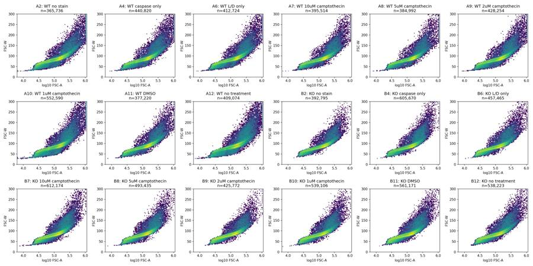
{"chunk_id":"aa2d0a","wall_time_seconds":0.167718625,"exit_code":0,"original_token_count":1551,"output":"channel BL1-A RL3-A FSC-W SSC-W \nquantile 0.01 0.25 0.50 0.75 0.99 0.01 0.25 0.50 0.75 0.99 0.01 0.25 0.50 0.75 0.99 0.01 0.25 0.50 0.75 0.99\nwell \nA10 -156.0 1131.0 7427.0 16543.0 68614.3 -425.0 1253.0 6223.0 15967.0 66219.9 38.0 69.0 84.0 100.0 302.0 30.0 66.0 83.0 99.0 300.0\nA11 -12.0 633.0 3698.0 7900.0 26276.0 -258.0 1861.8 7474.0 17634.0 58222.4 42.0 70.0 84.0 97.0 225.0 34.0 68.0 84.0 95.0 223.0\nA12 -120.0 1218.0 5237.0 8554.0 39323.0 -716.0 2125.0 11690.0 21092.0 85513.3 37.0 72.0 87.0 106.0 321.0 29.0 71.0 86.0 104.0 316.0\nA2 -58.0 47.0 111.0 223.0 1755.0 -106.0 -18.0 17.0 56.0 235.0 39.0 70.0 84.0 100.0 276.0 31.0 67.0 84.0 98.0 273.0\nA4 -32.0 678.0 3658.0 7969.0 29645.0 -105.0 -18.0 17.0 55.0 200.0 40.0 70.0 84.0 98.0 254.0 32.0 67.0 83.0 96.0 252.0\nA6 -43.0 71.0 153.0 281.0 1577.0 -334.0 1690.0 7664.0 18867.2 69579.0 40.0 69.0 84.0 98.0 255.0 32.0 67.0 83.0 96.0 253.0\nA7 -8.0 1180.0 7119.0 13739.0 46617.5 -312.0 2899.0 10337.0 21348.0 72547.2 42.0 71.0 84.0 97.0 228.0 35.0 69.0 84.0 95.0 226.0\nA8 -26.0 1412.0 8610.0 18188.0 59376.5 -312.0 2115.0 8865.0 19464.0 65073.5 42.0 71.0 84.0 96.0 230.0 34.0 69.0 84.0 95.0 228.0\nA9 -41.0 1067.0 6071.0 14547.0 51883.8 -384.0 1749.0 7697.0 19426.0 69379.9 41.0 70.0 84.0 97.0 247.0 32.0 67.0 83.0 95.0 245.0\nB10 4.0 570.0 3108.0 6550.0 23369.9 -211.0 2649.0 7247.0 16485.0 64386.9 42.0 67.0 80.0 93.0 206.0 35.0 65.0 80.0 92.0 205.0\nB11 10.0 356.0 1472.0 3187.0 12626.0 -89.0 1465.0 3866.0 8873.0 37065.6 41.0 66.0 79.0 93.0 214.0 36.0 64.0 79.0 92.0 213.0\nB12 8.0 373.0 1664.0 3556.0 14751.0 -93.0 1168.0 3266.0 7678.0 33166.8 41.0 67.0 80.0 94.0 220.0 35.0 65.0 80.0 93.0 219.0\nB2 -31.0 82.0 189.0 347.0 1915.1 -101.0 -17.0 17.0 55.0 184.0 43.0 70.0 82.0 93.0 191.0 38.0 69.0 82.0 93.0 190.0\nB4 18.0 468.0 2133.5 3615.0 13266.6 -102.0 -17.0 18.0 55.0 189.0 42.0 69.0 82.0 95.0 216.0 36.0 68.0 82.0 95.0 215.0\nB6 -46.0 45.0 106.0 207.0 1428.0 -217.0 2847.0 7211.0 17634.0 70263.4 41.0 66.0 79.0 92.0 204.0 36.0 65.0 79.0 91.0 203.0\nB7 6.0 564.0 2950.0 5699.0 22586.3 -197.0 2499.0 6719.0 14914.0 62045.8 41.0 67.0 80.0 94.0 223.0 35.0 65.0 80.0 94.0 222.0\nB8 22.0 569.0 2972.0 5454.0 20806.0 -137.0 2993.0 8492.0 17545.0 69850.6 42.0 68.0 81.0 94.0 208.0 36.0 67.0 81.0 93.0 207.7\nB9 25.0 454.0 2108.0 5237.0 17965.0 -176.0 2542.0 6239.0 15047.0 57245.6 42.0 66.0 79.0 91.0 188.0 36.0 65.0 78.0 90.0 187.0\nwell start end events median_fsc median_bl1 median_rl3\n A12 0.0 1.0 372 117783.5 2216.0 4925.5\n A12 1.0 2.0 447 131299.0 2950.0 7882.0\n A12 2.0 3.0 217 132143.0 2518.0 8967.0\n A12 3.0 4.0 48 66518.0 492.0 2458.5\n A12 4.0 5.0 1 36443.0 145.0 3191.0\n A12 5.0 6.0 0 NaN NaN NaN\n A12 6.0 7.0 47 229046.0 -66.0 7.0\n A12 7.0 8.0 54 385771.0 -21.0 18.5\n A12 8.0 9.0 0 NaN NaN NaN\n A12 9.0 10.0 50 204781.0 -62.0 -8.0\n A12 10.0 11.0 757 107681.0 2261.0 969.0\n A12 11.0 12.0 500 82524.5 2052.0 2351.0\n A12 12.0 13.0 3 32669.0 142.0 275.0\n A12 13.0 14.0 71 264976.0 -15.0 5.0\n A12 14.0 15.0 37 387634.0 -69.0 58.0\n A12 15.0 16.0 28 387743.0 -8.5 11.0\n A12 16.0 17.0 55 341559.0 -58.0 18.0\n A12 17.0 18.0 0 NaN NaN NaN\n A12 18.0 19.0 63 394692.0 -37.0 -60.0\n A12 19.0 20.0 74 245199.5 -32.5 27.5\n A12 20.0 21.0 13660 130887.5 5218.0 11105.0\n A12 21.0 22.0 12763 119528.0 4769.0 11161.0\n A12 22.0 23.0 5468 98718.0 3151.5 8463.0\n A12 23.0 24.0 11100 162635.0 6021.5 12613.5\n A12 24.0 25.0 20605 146836.0 6014.0 13428.0\n A12 25.0 26.0 19646 143006.0 5729.0 13098.5\n A12 26.0 27.0 22320 146855.0 5875.5 12535.0\n A12 27.0 28.0 21113 143363.0 5848.0 13204.0\n A12 28.0 29.0 19989 139531.0 5544.0 12682.0\n A12 29.0 30.0 22923 148849.0 5578.0 12614.0\n A12 30.0 31.0 21341 137049.0 4377.0 9203.0\n A12 31.0 32.0 16971 134074.0 4308.0 8874.0\n A12 32.0 33.0 14588 145804.0 5082.0 11125.5\n A12 33.0 34.0 13514 148450.0 5388.0 11921.0\n A12 34.0 35.0 12671 150173.0 5303.0 11956.0\n A12 35.0 36.0 12611 149578.0 5308.0 11737.0\n A12 36.0 37.0 13756 151064.5 5374.0 11944.5\n A12 37.0 38.0 12583 150517.0 5379.0 12341.0\n A12 38.0 39.0 12837 152688.0 5328.0 11986.0\n A12 39.0 40.0 12217 148542.0 5041.0 11872.0\n A12 40.0 41.0 13143 151206.0 5377.0 121
… [380 more characters not shown]tool call · exec
text(await tools.apply_patch("*** Begin Patch\n*** Add File: /task/outputs/explore_gates.py\n+\"\"\"Review cell and fluorescence distributions before locking shared gates.\"\"\"\n+from inspect_plate import *\n+\n+def main():\n+ fig, axs = plt.subplots(6, 6, figsize=(22, 20))\n+ stats = []\n+ for k, well in enumerate(['A2', 'A4', 'A6', 'B2', 'B4', 'B6']):\n+ row = LAYOUT[LAYOUT.well==well].iloc[0]\n+ s = fk.Sample('/task/inputs/raw/' + row.file)\n+ e = s.get_events(source='raw')\n+ c = {n:e[:,j] for j,n in enumerate(s.pnn_labels)}\n+ cell = (c['FSC-A']>=50000)&(c['FSC-A']<900000)&(c['SSC-A']>=30000)&(c['SSC-A']<1000000)\n+ # Provisional broad main-pulse band, for threshold exploration only.\n+ lower = np.interp(c['FSC-A'],[25000,50000,100000,200000,400000,900000],[35,40,50,63,80,110])\n+ upper = np.interp(c['FSC-A'],[25000,50000,100000,200000,400000,900000],[65,80,95,112,137,220])\n+ sing = cell & (c['FSC-W']>=lower)&(c['FSC-W']<upper)\n+ low = sing & (c['FSC-A']<100000)\n+ high = sing & (c['FSC-A']>=100000)\n+ for m, label, color in [(sing, 'all provisional singlets', '#444444'), (low, 'FSC-A < 100,000', '#0072B2'), (high, 'FSC-A >= 100,000', '#D55E00')]:\n+ for j,n in enumerate(['BL1-A','RL3-A']):\n+ axs[j,k].hist(np.arcsinh(c[n][m]/150), bins=np.linspace(-2,10,150), density=True,histtype='step',color=color,label=label)\n+ axs[j,k].set(title=f'{well}: {row[\"sample\"]}',xlabel=f'asinh({n}/150)',ylabel='Density')\n+ stats.append(dict(well=well,population=label,n=int(m.sum()),**{f'{ch}_q{q}':np.quantile(c[ch][m],q) for ch in ['BL1-A','RL3-A'] for q in [.5,.9,.95,.99,.995]}))\n+ ix=RNG.choice(np.flatnonzero(sing),min(50000,sing.sum()),replace=False)\n+ for j, (xn, yn) in enumerate([('FSC-A','RL3-A'),('FSC-A','BL1-A'),('BL1-A','RL3-A'),('SSC-A','RL3-A')]):\n+ x=np.log10(c[xn][ix]) if xn in ['FSC-A','SSC-A'] else np.arcsinh(c[xn][ix]/150)\n+ y=np.arcsinh(c[yn][ix]/150)\n+ axs[j+2,k].hist2d(x,y,bins=100,norm=LogNorm())\n+ axs[j+2,k].set(xlabel=xn,ylabel=yn,title=f'{well}: provisional singlets')\n+ axs[0,0].legend(fontsize=7)\n+ fig.tight_layout()\n+ fig.savefig(OUT/'qc_control_gate_exploration.png',dpi=150)\n+ pd.DataFrame(stats).to_csv(OUT/'control_gate_exploration.csv',index=False)\n+ print(pd.DataFrame(stats).to_string(index=False))\n+ fig,axs=plt.subplots(2,3,figsize=(16,9))\n+ for ax,well in zip(axs.ravel(),['A6','A11','A12','B6','B11','B12']):\n+ row=LAYOUT[LAYOUT.well==well].iloc[0]\n+ s=fk.Sample('/task/inputs/raw/'+row.file)\n+ e=s.get_events(source='raw')\n+ c={n:e[:,j] for j,n in enumerate(s.pnn_labels)}\n+ for lo,hi in [(0,50000),(50000,100000),(100000,250000),(250000,1000000)]:\n+ mask=(c['FSC-A']>=lo)&(c['FSC-A']<hi)\n+ ax.hist(np.arcsinh(c['RL3-A'][mask]/150),bins=np.linspace(-2,10,160),histtype='step',density=True,label=f'{lo/1000:g}–{hi/1000:g}k FSC-A')\n+ ax.set(title=row['sample']+' ('+well+')',xlabel='asinh(RL3-A/150)',ylabel='Density')\n+ ax.legend(fontsize=8)\n+ fig.tight_layout();fig.savefig(OUT/'qc_viability_scatter.png',dpi=150)\n+\n+if __name__=='__main__': main()\n*** End Patch"));
text(await tools.exec_command({cmd:"python /task/outputs/explore_gates.py","yield_time_ms":1000,"max_output_tokens":4000}));
tool output
Script completed
Wall time 1.2 seconds
Output:
{}
{"chunk_id":"1d93d0","wall_time_seconds":1.000325164,"session_id":36172,"original_token_count":0,"output":""}tool call · exec
text(await tools.write_stdin({session_id:36172,chars:"","yield_time_ms":1000,"max_output_tokens":4500}));
text(await tools.exec_command({cmd:"ls -lh /task/outputs/qc*","max_output_tokens":1200}));
tool output
Script completed
Wall time 0.0 seconds
Output:
{"chunk_id":"074259","wall_time_seconds":0.000003782,"exit_code":0,"original_token_count":784,"output":"well population n BL1-A_q0.5 BL1-A_q0.9 BL1-A_q0.95 BL1-A_q0.99 BL1-A_q0.995 RL3-A_q0.5 RL3-A_q0.9 RL3-A_q0.95 RL3-A_q0.99 RL3-A_q0.995\n A2 all provisional singlets 221477 131.0 457.0 682.0 1181.00 1404.000 20.0 93.0 115.00 162.00 184.000\n A2 FSC-A < 100,000 49264 88.0 255.0 322.0 487.00 586.000 10.0 71.0 89.00 122.00 134.000\n A2 FSC-A >= 100,000 172213 144.0 533.0 757.0 1254.00 1484.940 24.0 98.0 121.00 169.00 190.000\n A4 all provisional singlets 266560 5072.0 11563.0 14646.0 21113.82 24827.410 20.0 92.0 114.00 159.00 179.000\n A4 FSC-A < 100,000 63771 1360.0 5367.0 7372.5 9556.00 10775.450 10.0 71.0 90.00 124.00 137.150\n A4 FSC-A >= 100,000 202789 6346.0 12823.0 15660.6 22482.12 26359.180 24.0 97.0 120.00 166.00 186.000\n A6 all provisional singlets 249507 185.0 497.0 716.0 1168.94 1382.000 13003.0 27255.0 32888.20 50743.22 59097.290\n A6 FSC-A < 100,000 57665 111.0 266.0 329.0 485.00 575.000 4931.0 9506.0 11388.00 18793.08 22806.000\n A6 FSC-A >= 100,000 191842 210.0 575.0 791.0 1249.00 1469.000 16037.0 29250.0 35330.00 53915.95 62414.080\n B2 all provisional singlets 261053 238.0 669.0 1027.0 1765.00 2056.000 21.0 94.0 117.00 167.00 189.000\n B2 FSC-A < 100,000 72744 114.0 285.0 378.0 599.57 691.000 9.0 71.0 88.00 123.00 136.000\n B2 FSC-A >= 100,000 188309 287.0 832.0 1189.0 1905.00 2202.000 27.0 102.0 126.00 177.00 199.000\n B4 all provisional singlets 375928 2708.0 5370.0 6731.0 10053.00 11670.365 20.0 92.0 114.00 163.00 184.000\n B4 FSC-A < 100,000 112812 814.0 2287.0 2782.0 3951.78 4734.000 9.0 71.0 88.00 121.00 135.000\n B4 FSC-A >= 100,000 263116 3205.0 6098.0 7372.0 10876.00 12563.425 26.0 100.0 123.00 173.00 194.000\n B6 all provisional singlets 270484 139.0 394.0 619.0 1316.00 1604.000 12144.0 29344.0 37091.00 58526.85 68749.985\n B6 FSC-A < 100,000 91306 79.0 207.0 295.0 513.00 606.000 6025.0 10231.0 12042.00 19806.95 24252.350\n B6 FSC-A >= 100,000 179178 176.0 495.0 793.0 1490.00 1765.115 16888.0 33776.3 42082.15 64320.38 74959.345\n"}
{"chunk_id":"052707","wall_time_seconds":0.0000043,"exit_code":0,"original_token_count":135,"output":"-rw-r--r-- 1 root root 726K Nov 10 17:11 /task/outputs/qc_control_gate_exploration.png\n-rw-r--r-- 1 root root 374K Nov 10 17:09 /task/outputs/qc_raw_fluorescence.png\n-rw-r--r-- 1 root root 336K Nov 10 17:09 /task/outputs/qc_raw_scatter.png\n-rw-r--r-- 1 root root 288K Nov 10 17:09 /task/outputs/qc_raw_singlets.png\n-rw-r--r-- 1 root root 466K Nov 10 17:10 /task/outputs/qc_raw_time.png\n-rw-r--r-- 1 root root 334K Nov 10 17:10 /task/outputs/qc_raw_width.png\n-rw-r--r-- 1 root root 163K Nov 10 17:11 /task/outputs/qc_viability_scatter.png\n"}tool call · exec
for(const p of ["qc_control_gate_exploration.png","qc_viability_scatter.png"]){image((await tools.view_image({path:"/task/outputs/"+p})).image_url);}
tool output
Script completed Wall time 0.1 seconds Output:
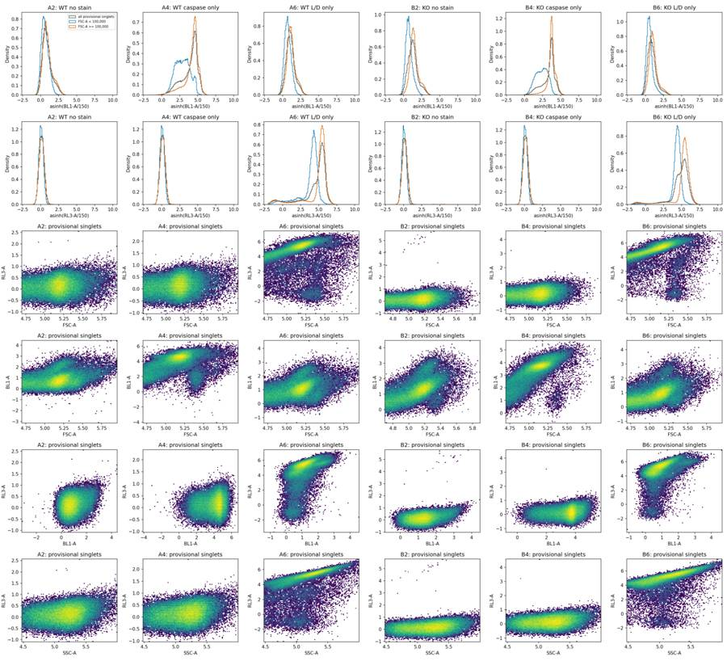
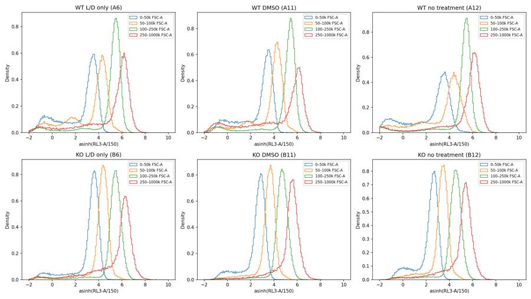
tool call · exec
text(await tools.apply_patch("*** Begin Patch\n*** Add File: /task/outputs/analyse_plate.py\n+\"\"\"Reproducible FlowKit 1.2.3 analysis. Run from any working directory.\n+\n+All counts are generated with one strategy, exported and parsed as GatingML 2.0.\n+Controls and excluded samples receive the same gates as experimental samples.\n+\"\"\"\n+from pathlib import Path\n+import json\n+import hashlib\n+import importlib.metadata\n+import numpy as np\n+import pandas as pd\n+import matplotlib\n+matplotlib.use('Agg')\n+import matplotlib.pyplot as plt\n+from matplotlib.colors import LogNorm\n+import flowkit as fk\n+\n+OUT=Path('/task/outputs')\n+RAW=Path('/task/inputs/raw')\n+LAYOUT=pd.read_csv('/task/inputs/plate_layout.csv')\n+CELL_BOUNDS={'FSC-A':(50000,900000),'SSC-A':(30000,1000000)}\n+AREA_KNOTS=[25000,50000,100000,200000,400000,900000]\n+WIDTH_LOW=[35,40,50,63,80,110]\n+WIDTH_HIGH=[65,80,95,112,137,220]\n+SINGLET_VERTICES=list(zip(AREA_KNOTS,WIDTH_LOW))+list(zip(AREA_KNOTS[::-1],WIDTH_HIGH[::-1]))\n+LIVE_MAX=1000.0\n+CASPASE_MIN=2200.0\n+POPULATIONS=[\n+ ('cells','cells','all_events',('root',)),\n+ ('singlets','singlets','cells',('root','cells')),\n+ ('live','live','singlets',('root','cells','singlets')),\n+ ('caspase_positive','marker_positive','live',('root','cells','singlets','live')),\n+ ('caspase_all_singlets','other','singlets',('root','cells','singlets')),\n+ ('nonlive','other','singlets',('root','cells','singlets')),\n+ ('caspase_nonlive','other','nonlive',('root','cells','singlets','nonlive')),\n+]\n+\n+def dim(name,lo=None,hi=None):\n+ return fk.Dimension(name,compensation_ref='uncompensated',range_min=lo,range_max=hi)\n+\n+def make_strategy():\n+ gs=fk.GatingStrategy()\n+ gs.add_gate(fk.gates.RectangleGate('cells',[dim(c,*b) for c,b in CELL_BOUNDS.items()]),('root',))\n+ gs.add_gate(fk.gates.PolygonGate('singlets',[dim('FSC-A'),dim('FSC-W')],SINGLET_VERTICES),('root','cells'))\n+ gs.add_gate(fk.gates.RectangleGate('live',[dim('RL3-A',hi=LIVE_MAX)]),('root','cells','singlets'))\n+ gs.add_gate(fk.gates.RectangleGate('caspase_positive',[dim('BL1-A',lo=CASPASE_MIN)]),('root','cells','singlets','live'))\n+ gs.add_gate(fk.gates.RectangleGate('caspase_all_singlets',[dim('BL1-A',lo=CASPASE_MIN)]),('root','cells','singlets'))\n+ gs.add_gate(fk.gates.RectangleGate('nonlive',[dim('RL3-A',lo=LIVE_MAX)]),('root','cells','singlets'))\n+ gs.add_gate(fk.gates.RectangleGate('caspase_nonlive',[dim('BL1-A',lo=CASPASE_MIN)]),('root','cells','singlets','nonlive'))\n+ return gs\n+\n+def main():\n+ OUT.mkdir(exist_ok=True)\n+ gs=make_strategy()\n+ with open(OUT/'gates.xml','wb') as f:\n+ fk.export_gatingml(gs,f)\n+ saved=fk.parse_gating_xml(str(OUT/'gates.xml'))\n+ counts,well_stats,control_stats,time_stats,sensitivity,verification=[],[],[],[],[],[]\n+ rng=np.random.default_rng(20230309)\n+ figs={}\n+ for name in ['gates','fluorescence']:\n+ fig,axs=plt.subplots(3,6,figsize=(22,11))\n+ figs[name]=(fig,axs.ravel())\n+ for i,row in LAYOUT.iterrows():\n+ s=fk.Sample(str(RAW/row.file))\n+ result=saved.gate_sample(s)\n+ orig=gs.gate_sample(s)\n+ e=s.get_events(source='raw')\n+ c={name:e[:,j] for j,name in enumerate(s.pnn_labels)}\n+ counts.append(dict(file=row.file,well=row.well,population='all_events',role='other',parent='none',count=s.event_count,pct_of_parent=np.nan))\n+ ns={'all_events':s.event_count}\n+ masks={}\n+ for pop,role,parent,path in POPULATIONS:\n+ n=int(result.get_gate_count(pop))\n+ assert n==int(orig.get_gate_count(pop))\n+ ns[pop]=n\n+ masks[pop]=result.get_gate_membership(pop)\n+ assert int(masks[pop].sum())==n\n+ counts.append(dict(file=row.file,well=row.well,population=pop,role=role,parent=parent,count=n,pct_of_parent=100*n/ns[parent] if ns[parent] else np.nan))\n+ assert ns['live']+ns['nonlive']==ns['singlets']\n+ assert ns['caspase_positive']+ns['caspase_nonlive']==ns['caspase_all_singlets']\n+ verification.append(dict(file=row.file,well=row.well,all_populations_match=True,events=s.event_count))\n+ m=masks['singlets']; live=masks['live']\n+ ws=dict(file=row.file,well=row.well,sample=row['sample'],genotype=row.genotype,treatment=row.treatment,**ns,\n+ live_pct=100*ns['live']/ns['singlets'],\n+ caspase_live_pct=100*ns['caspase_positive']/ns['live'],\n+ caspase_total_pct=100*ns['caspase_all_singlets']/ns['singlets'],\n+ caspase_nonlive_pct=100*ns['caspase_nonlive']/ns['nonlive'],\n+ live_bl1_median=float(np.median(c['BL1-A'][live])),\n+ singlets_bl1_median=float(np.median(c['BL1-A'][m])),\n+ singlets_rl3_median=float(np.median(c['RL3-A'][m])),\n+ singlets_bl1_ceiling_pct=float(100*np.mean(c['BL1-A'][m]>=1048575)),\n+ singlets_rl3_ceiling_pct=float(100*np.mean(c['RL3-A'][m]>=1048575)))\n+ well_stats.append(ws)\n+ for pop in ['singlets','live']:\n+ for ch in ['BL1-A','RL3-A']:\n+ for q in [.5,.95,.99,.995,.999]:\n+ control_stats.append(dict(well=row.well,population=pop,channel=ch,quantile=q,value=np.quantile(c[ch][masks[pop]],q)))\n+ # Diagnostic time slices are not extra gates or reported populations.\n+ for lo,hi in [(0,20),(20,32),(32,46),(0,10),(10,20),(20,30),(30,40),(40,46)]:\n+ tm=(c['Time']>=lo)&(c['Time']<hi)\n+ sm=m&tm;lm=live&tm\n+ time_stats.append(dict(well=row.well,start_s=lo,end_s=hi,events=int(tm.sum()),events_per_s=tm.sum()/(hi-lo),singlets=int(sm.sum()),live=int(lm.sum()),\n+ caspase_live_pct=100*np.mean(c['BL1-A'][lm]>=CASPASE_MIN) if lm.any() else np.nan,\n+ live_pct=100*lm.sum()/sm.sum() if sm.any() else
… [4,222 more characters not shown]tool output
Script completed
Wall time 1.2 seconds
Output:
{}
{"chunk_id":"1332b9","wall_time_seconds":1.001580284,"session_id":8907,"original_token_count":0,"output":""}tool call · exec
text(await tools.write_stdin({session_id:8907,chars:"","yield_time_ms":1000,"max_output_tokens":4000}));
text(await tools.exec_command({cmd:"head -35 /task/outputs/gates.xml\nls -lh /task/outputs/counts.csv","max_output_tokens":3000}));
tool output
Script completed
Wall time 4.6 seconds
Output:
{"chunk_id":"defae9","wall_time_seconds":4.538582994,"exit_code":0,"original_token_count":400,"output":"A2: singlets=221,477, live=221,475 (100.00%), caspase/live=0.07%, caspase/singlets=0.07%\nA4: singlets=266,560, live=266,559 (100.00%), caspase/live=71.51%, caspase/singlets=71.51%\nA6: singlets=249,507, live=33,328 (13.36%), caspase/live=0.08%, caspase/singlets=0.06%\nA7: singlets=253,721, live=24,523 (9.67%), caspase/live=39.32%, caspase/singlets=81.82%\nA8: singlets=248,064, live=31,937 (12.87%), caspase/live=47.62%, caspase/singlets=83.26%\nA9: singlets=262,503, live=40,206 (15.32%), caspase/live=45.92%, caspase/singlets=80.09%\nA10: singlets=309,969, live=45,627 (14.72%), caspase/live=47.27%, caspase/singlets=80.31%\nA11: singlets=242,172, live=33,707 (13.92%), caspase/live=21.19%, caspase/singlets=72.22%\nA12: singlets=249,474, live=33,639 (13.48%), caspase/live=36.21%, caspase/singlets=77.27%\nB2: singlets=261,054, live=260,978 (99.97%), caspase/live=0.36%, caspase/singlets=0.36%\nB4: singlets=375,928, live=375,916 (100.00%), caspase/live=60.82%, caspase/singlets=60.82%\nB6: singlets=270,484, live=17,587 (6.50%), caspase/live=0.02%, caspase/singlets=0.12%\nB7: singlets=357,363, live=14,936 (4.18%), caspase/live=36.20%, caspase/singlets=71.10%\nB8: singlets=304,973, live=9,175 (3.01%), caspase/live=33.80%, caspase/singlets=71.41%\nB9: singlets=256,576, live=14,790 (5.76%), caspase/live=32.24%, caspase/singlets=67.90%\nB10: singlets=322,346, live=17,302 (5.37%), caspase/live=30.50%, caspase/singlets=72.58%\nB11: singlets=324,202, live=18,907 (5.83%), caspase/live=15.06%, caspase/singlets=55.37%\nB12: singlets=318,312, live=26,864 (8.44%), caspase/live=17.37%, caspase/singlets=58.19%\n"}
{"chunk_id":"dc3e96","wall_time_seconds":0.000005843,"exit_code":0,"original_token_count":442,"output":"<?xml version='1.0' encoding='UTF-8'?>\n<gating:Gating-ML xmlns:gating=\"http://www.isac-net.org/std/Gating-ML/v2.0/gating\" xmlns:data-type=\"http://www.isac-net.org/std/Gating-ML/v2.0/datatypes\" xmlns:transforms=\"http://www.isac-net.org/std/Gating-ML/v2.0/transformations\">\n <gating:RectangleGate gating:id=\"cells\">\n <gating:dimension gating:compensation-ref=\"uncompensated\" gating:min=\"50000.0\" gating:max=\"900000.0\">\n <data-type:fcs-dimension data-type:name=\"FSC-A\"/>\n </gating:dimension>\n <gating:dimension gating:compensation-ref=\"uncompensated\" gating:min=\"30000.0\" gating:max=\"1000000.0\">\n <data-type:fcs-dimension data-type:name=\"SSC-A\"/>\n </gating:dimension>\n </gating:RectangleGate>\n <gating:PolygonGate gating:id=\"singlets\" gating:parent_id=\"cells\">\n <gating:dimension gating:compensation-ref=\"uncompensated\">\n <data-type:fcs-dimension data-type:name=\"FSC-A\"/>\n </gating:dimension>\n <gating:dimension gating:compensation-ref=\"uncompensated\">\n <data-type:fcs-dimension data-type:name=\"FSC-W\"/>\n </gating:dimension>\n <gating:vertex>\n <gating:coordinate data-type:value=\"25000\"/>\n <gating:coordinate data-type:value=\"35\"/>\n </gating:vertex>\n <gating:vertex>\n <gating:coordinate data-type:value=\"50000\"/>\n <gating:coordinate data-type:value=\"40\"/>\n </gating:vertex>\n <gating:vertex>\n <gating:coordinate data-type:value=\"100000\"/>\n <gating:coordinate data-type:value=\"50\"/>\n </gating:vertex>\n <gating:vertex>\n <gating:coordinate data-type:value=\"200000\"/>\n <gating:coordinate data-type:value=\"63\"/>\n </gating:vertex>\n <gating:vertex>\n <gating:coordinate data-type:value=\"400000\"/>\n-rw-r--r-- 1 root root 15K Nov 10 17:12 /task/outputs/counts.csv\n"}15
agent
The shared gates are saved and reproduce the counts after reloading. With these gates, the DMSO wells have 21.2% caspase-positive events among Zombie-low WT cells and 15.1% among Zombie-low KO cells. Camptothecin raises this fraction in both genotypes. However, only 3–15% of singlets fall in the Zombie-low gate, so I’m testing how strongly the result depends on that boundary before interpreting it biologically.
tool call · exec
for(const p of ["qc_final_gates.png","qc_final_fluorescence.png"]){image((await tools.view_image({path:"/task/outputs/"+p})).image_url);}
text(await tools.exec_command({cmd:"python - <<'PY'\nimport pandas as pd\ns=pd.read_csv('/task/outputs/sensitivity.csv')\nf=s[(s.analysis=='fluorescence_threshold') & s.well.isin(['A11','B11','A7','B7','A8','B8'])]\nprint(f.pivot(index=['live_max','caspase_min'],columns='well',values='caspase_live_pct').round(2).to_string())\nprint(s[(s.analysis=='scatter_threshold') & s.well.isin(['A11','B11','A7','B7','A8','B8'])].pivot(index=['scatter_fsc_min','scatter_ssc_min'],columns='well',values='caspase_live_pct').round(2).to_string())\nt=pd.read_csv('/task/outputs/gated_time_windows.csv')\nprint(t[t.well=='A12'].to_string(index=False))\nprint(t[t.well.isin(['A11','B11'])].to_string(index=False))\nPY","max_output_tokens":5000}));
tool output
Script completed Wall time 0.4 seconds Output:
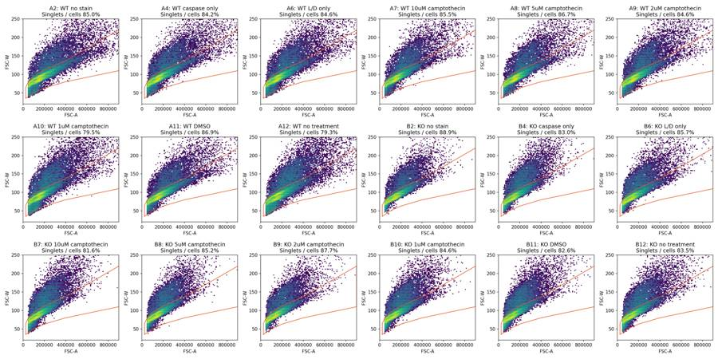
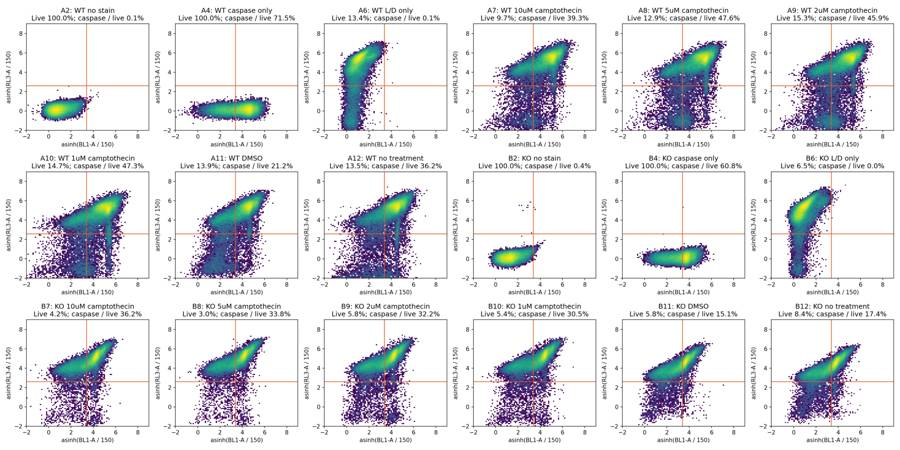
{"chunk_id":"c5a02f","wall_time_seconds":0.193409044,"exit_code":0,"original_token_count":975,"output":"well A11 A7 A8 B11 B7 B8\nlive_max caspase_min \n500.0 1500.0 25.83 49.08 59.73 19.03 45.65 44.12\n 2200.0 17.89 36.19 44.63 13.07 37.50 35.01\n 3000.0 12.87 26.20 32.28 6.62 31.47 27.98\n1000.0 1500.0 29.13 51.80 61.94 20.95 44.37 42.98\n 2200.0 21.19 39.32 47.62 15.06 36.20 33.80\n 3000.0 16.14 29.64 35.75 7.48 30.31 27.06\n2000.0 1500.0 32.11 54.39 64.26 14.36 39.86 39.21\n 2200.0 24.04 42.34 50.73 10.10 32.29 30.76\n 3000.0 18.94 33.04 39.35 5.07 26.90 24.80\n3000.0 1500.0 32.32 54.72 63.94 13.06 32.45 30.41\n 2200.0 24.21 43.06 51.13 6.87 24.57 22.94\n 3000.0 19.21 34.12 40.31 3.14 19.82 18.28\nwell A11 A7 A8 B11 B7 B8\nscatter_fsc_min scatter_ssc_min \n30000 10000 19.64 34.42 41.60 8.31 21.45 19.65\n50000 30000 21.19 39.32 47.62 15.06 36.20 33.80\n75000 50000 20.52 40.42 50.23 19.30 48.13 45.84\n100000 50000 19.11 39.29 49.26 18.66 51.12 49.18\nwell start_s end_s events events_per_s singlets live caspase_live_pct live_pct fsc_median\n A12 0 20 2824 141.200000 1520 374 37.700535 24.605263 114985.5\n A12 20 32 207899 17324.916667 132136 19021 33.988749 14.395017 140274.0\n A12 32 46 184919 13208.500000 107962 13272 39.263110 12.293214 148141.0\n A12 0 10 1236 123.600000 784 114 28.947368 14.540816 126982.0\n A12 10 20 1588 158.800000 736 260 41.538462 35.326087 106225.0\n A12 20 30 169587 16958.700000 110954 16448 33.694066 14.824161 141052.0\n A12 30 40 143089 14308.900000 82127 10056 38.225935 12.244451 146182.0\n A12 40 46 80142 13357.000000 47017 5789 39.557782 12.312568 146439.5\nwell start_s end_s events events_per_s singlets live caspase_live_pct live_pct fsc_median\n A11 0 20 163748 8187.400000 104227 14189 21.650574 13.613555 122745.0\n A11 20 32 99460 8288.333333 64189 9010 21.498335 14.036673 137361.0\n A11 32 46 106615 7615.357143 68977 9830 20.213632 14.251127 136294.0\n A11 0 10 82504 8250.400000 53057 7300 21.273973 13.758788 119075.0\n A11 10 20 81244 8124.400000 51170 6889 22.049644 13.462967 126758.0\n A11 20 30 83248 8324.800000 53723 7535 21.592568 14.025650 137522.5\n A11 30 40 78748 7874.800000 51259 7355 20.462271 14.348700 137965.0\n A11 40 46 44079 7346.500000 28184 3950 20.050633 14.015044 133183.0\n B11 0 20 252403 12620.150000 144890 8473 15.602502 5.847885 92292.0\n B11 20 32 149576 12464.666667 87133 5074 15.411904 5.823282 104048.0\n B11 32 46 158043 11288.785714 91542 5317 13.898815 5.808263 98821.0\n B11 0 10 128154 12815.400000 73942 4410 16.009070 5.964134 88165.0\n B11 10 20 124249 12424.900000 70948 4063 15.161211 5.726729 96649.0\n B11 20 30 125431 12543.100000 73087 4219 15.430197 5.772572 104571.0\n B11 30 40 116776 11677.600000 67932 4061 14.134450 5.978037 101143.5\n B11 40 46 65412 10902.000000 37656 2111 14.021791 5.606012 95681.0\n"}tool call · exec
text(await tools.exec_command({cmd:"python - <<'PY'\nimport pandas as pd,json\nw=pd.read_csv('/task/outputs/well_metrics.csv')\nprint(w[['well','sample','all_events','cells','singlets','live','caspase_positive','live_pct','caspase_live_pct','caspase_total_pct','caspase_nonlive_pct','singlets_bl1_ceiling_pct','singlets_rl3_ceiling_pct']].round(4).to_string(index=False))\nt=pd.read_csv('/task/outputs/time_bins.csv')\nfor well,g in t.groupby('well',sort=False):\n g=g[(g.start>=1)&(g.end<=45)]\n print(well,'median',g.events.median(),'min',g.events.min(),'max',g.events.max(),'CV',round(g.events.std()/g.events.mean(),3),'maxmedian',round(g.events.max()/g.events.median(),2),'zero bins',int((g.events==0).sum()))\nmd=json.load(open('/task/outputs/fcs_metadata.json'))\nfor key in ['spillover','date','p2v','p3v','p4v','p5v','#flowrate','#tr1','vol']:\n print(key,set(v.get(key) for v in md.values()))\nPY","max_output_tokens":5000}));
tool output
Script completed
Wall time 0.3 seconds
Output:
{"chunk_id":"a07a16","wall_time_seconds":0.181527806,"exit_code":0,"original_token_count":1330,"output":"well sample all_events cells singlets live caspase_positive live_pct caspase_live_pct caspase_total_pct caspase_nonlive_pct singlets_bl1_ceiling_pct singlets_rl3_ceiling_pct\n A2 WT no stain 365736 260536 221477 221475 156 99.9991 0.0704 0.0704 0.0000 0.0 0.0\n A4 WT caspase only 440820 316496 266560 266559 190620 99.9996 71.5114 71.5115 100.0000 0.0 0.0\n A6 WT L/D only 412724 295094 249507 33328 26 13.3575 0.0780 0.0629 0.0606 0.0 0.0\n A7 WT 10uM camptothecin 395514 296607 253721 24523 9642 9.6653 39.3182 81.8166 86.3638 0.0 0.0\n A8 WT 5uM camptothecin 384992 286095 248064 31937 15209 12.8745 47.6219 83.2640 88.5308 0.0 0.0\n A9 WT 2uM camptothecin 428254 310292 262503 40206 18461 15.3164 45.9160 80.0947 86.2765 0.0 0.0\n A10 WT 1uM camptothecin 552590 389784 309969 45627 21567 14.7199 47.2681 80.3080 86.0109 0.0 0.0\n A11 WT DMSO 377220 278543 242172 33707 7143 13.9186 21.1914 72.2181 80.4687 0.0 0.0\n A12 WT no treatment 409074 314426 249474 33639 12182 13.4840 36.2139 77.2730 83.6722 0.0 0.0\n B2 KO no stain 392795 293797 261054 260978 934 99.9709 0.3579 0.3631 18.4211 0.0 0.0\n B4 KO caspase only 605670 452698 375928 375916 228645 99.9968 60.8234 60.8233 58.3333 0.0 0.0\n B6 KO L/D only 457465 315509 270484 17587 4 6.5020 0.0227 0.1183 0.1250 0.0 0.0\n B7 KO 10uM camptothecin 612174 437716 357363 14936 5407 4.1795 36.2011 71.0980 72.6201 0.0 0.0\n B8 KO 5uM camptothecin 493435 357837 304973 9175 3101 3.0085 33.7984 71.4063 72.5728 0.0 0.0\n B9 KO 2uM camptothecin 425772 292550 256576 14790 4769 5.7644 32.2448 67.9003 70.0814 0.0 0.0\n B10 KO 1uM camptothecin 539106 380823 322346 17302 5277 5.3675 30.4994 72.5819 74.9689 0.0 0.0\n B11 KO DMSO 561171 392484 324202 18907 2848 5.8319 15.0632 55.3723 57.8686 0.0 0.0\n B12 KO no treatment 538223 381303 318312 26864 4665 8.4395 17.3652 58.1888 61.9517 0.0 0.0\nA2 median 7967.5 min 6544 max 8559 CV 0.06 maxmedian 1.07 zero bins 0\nA4 median 9510.0 min 8449 max 10043 CV 0.034 maxmedian 1.06 zero bins 0\nA6 median 9121.0 min 7515 max 9741 CV 0.058 maxmedian 1.07 zero bins 0\nA7 median 8553.5 min 7127 max 9212 CV 0.055 maxmedian 1.08 zero bins 0\nA8 median 8504.0 min 6222 max 12591 CV 0.117 maxmedian 1.48 zero bins 0\nA9 median 9134.5 min 7638 max 10328 CV 0.065 maxmedian 1.13 zero bins 0\nA10 median 11839.0 min 9391 max 13883 CV 0.093 maxmedian 1.17 zero bins 0\nA11 median 8156.0 min 7057 max 8473 CV 0.043 maxmedian 1.04 zero bins 0\nA12 median 12400.0 min 0 max 22923 CV 0.943 maxmedian 1.85 zero bins 3\nB2 median 8416.5 min 7834 max 8910 CV 0.036 maxmedian 1.06 zero bins 0\nB4 median 13175.5 min 10957 max 13619 CV 0.056 maxmedian 1.03 zero bins 0\nB6 median 9913.5 min 8880 max 10556 CV 0.042 maxmedian 1.06 zero bins 0\nB7 median 13061.0 min 11806 max 14304 CV 0.052 maxmedian 1.1 zero bins 0\nB8 median 10816.0 min 9156 max 15521 CV 0.094 maxmedian 1.44 zero bins 0\nB9 median 9336.0 min 7831 max 9932 CV 0.065 maxmedian 1.06 zero bins 0\nB10 median 11644.5 min 9447 max 12446 CV 0.056 maxmedian 1.07 zero bins 0\nB11 median 12415.0 min 10702 max 13143 CV 0.051 maxmedian 1.06 zero bins 0\nB12 median 11435.0 min 9237 max 12807 CV 0.069 maxmedian 1.12 zero bins 0\nspillover {'2,BL1-A,RL3-A,1.000000,0.000000,0.000000,1.000000'}\ndate {'09-Mar-2023'}\np2v {'30'}\np3v {'300'}\np4v {'250'}\np5v {'300'}\n#flowrate {'200'}\n#tr1 {'OR_FSC,25000'}\nvol {'155000', '158000', '154000', '157000'}\n"}tool call · exec
text(await tools.exec_command({cmd:"python - <<'PY'\nimport pandas as pd\ns=pd.read_csv('/task/outputs/sensitivity.csv'); w=pd.read_csv('/task/outputs/well_metrics.csv').set_index('well')\np=s[s.analysis=='fluorescence_threshold'].pivot(index=['live_max','caspase_min'],columns='well',values='caspase_live_pct')\nfor a,b in [('A11','B11'),('A10','B10'),('A9','B9'),('A8','B8'),('A7','B7')]:\n d=p[b]-p[a];print(a,b,'diff',w.loc[b,'caspase_live_pct']-w.loc[a,'caspase_live_pct'],'range',d.min(),d.max(),'fold',w.loc[b,'caspase_live_pct']/w.loc[a,'caspase_live_pct'])\nfor a,b in [('A11','A10'),('A11','A9'),('A11','A8'),('A11','A7'),('B11','B10'),('B11','B9'),('B11','B8'),('B11','B7')]:\n print(a,b,'diff',w.loc[b,'caspase_live_pct']-w.loc[a,'caspase_live_pct'],'fold',w.loc[b,'caspase_live_pct']/w.loc[a,'caspase_live_pct'])\nfor genotype in ['A','B']:\n base=w.loc[genotype+'11','caspase_live_pct'];print(genotype,'response pp',dict((x,round(w.loc[genotype+x,'caspase_live_pct']-base,2)) for x in ['10','9','8','7']))\nq=pd.read_csv('/task/outputs/gated_quantiles.csv')\nprint(q[(q.population=='singlets') & q.well.isin(['A2','A4','A6','B2','B4','B6']) & q['quantile'].isin([.5,.995,.999])].to_string(index=False))\nPY","max_output_tokens":5000}));
text(await tools.web__run({search_query:[{q:'site.biolegend.com \"Zombie NIR\" \"To minimize background\" \"titrate\"'},{q:'site.biolegend.com \"Zombie NIR\" \"1:100-1:1000\"'}],response_length:"long"}));
tool output
Script completed
Wall time 1.2 seconds
Output:
{"chunk_id":"74ff2a","wall_time_seconds":0.167431213,"exit_code":0,"original_token_count":674,"output":"A11 B11 diff -6.128239809427125 range -19.262091221397796 -4.828115978778969 fold 0.7108153727336411\nA10 B10 diff -16.768700726187415 range -24.46759668902373 -10.457298829583234 fold 0.6452424963908967\nA9 B9 diff -13.671272460015508 range -28.50607767500327 -4.409692079920013 fold 0.7022549263163514\nA8 B8 diff -13.823515454770927 range -33.52879880587078 -4.300701386005372 fold 0.7097234446189631\nA7 B7 diff -3.1170662867763284 range -22.264093445328108 5.273714282477314 fold 0.9207220322022237\nA11 A10 diff 26.076621047808814 fold 2.2305259214034603\nA11 A9 diff 24.724588519243085 fold 2.1667250528043214\nA11 A8 diff 26.430436663659613 fold 2.2472220756292516\nA11 A7 diff 18.126747172192218 fold 1.8553804660969944\nB11 B10 diff 15.436160131048524 fold 2.0247594086999103\nB11 B9 diff 17.1815558686547 fold 2.140630887670837\nB11 B8 diff 18.73516101831581 fold 2.2437699767320822\nB11 B7 diff 21.137920694843015 fold 2.403281834892545\nA response pp {'10': 26.08, '9': 24.72, '8': 26.43, '7': 18.13}\nB response pp {'10': 15.44, '9': 17.18, '8': 18.74, '7': 21.14}\nwell population channel quantile value\n A2 singlets BL1-A 0.500 131.000\n A2 singlets BL1-A 0.995 1404.000\n A2 singlets BL1-A 0.999 2046.048\n A2 singlets RL3-A 0.500 20.000\n A2 singlets RL3-A 0.995 184.000\n A2 singlets RL3-A 0.999 233.000\n A4 singlets BL1-A 0.500 5072.000\n A4 singlets BL1-A 0.995 24827.410\n A4 singlets BL1-A 0.999 34440.733\n A4 singlets RL3-A 0.500 20.000\n A4 singlets RL3-A 0.995 179.000\n A4 singlets RL3-A 0.999 227.000\n A6 singlets BL1-A 0.500 185.000\n A6 singlets BL1-A 0.995 1382.000\n A6 singlets BL1-A 0.999 1997.988\n A6 singlets RL3-A 0.500 13003.000\n A6 singlets RL3-A 0.995 59097.290\n A6 singlets RL3-A 0.999 77974.676\n B2 singlets BL1-A 0.500 238.000\n B2 singlets BL1-A 0.995 2056.000\n B2 singlets BL1-A 0.999 2829.735\n B2 singlets RL3-A 0.500 21.000\n B2 singlets RL3-A 0.995 189.000\n B2 singlets RL3-A 0.999 253.947\n B4 singlets BL1-A 0.500 2708.000\n B4 singlets BL1-A 0.995 11670.365\n B4 singlets BL1-A 0.999 15916.730\n B4 singlets RL3-A 0.500 20.000\n B4 singlets RL3-A 0.995 184.000\n B4 singlets RL3-A 0.999 233.000\n B6 singlets BL1-A 0.500 139.000\n B6 singlets BL1-A 0.995 1604.000\n B6 singlets BL1-A 0.999 2266.517\n B6 singlets RL3-A 0.500 12144.000\n B6 singlets RL3-A 0.995 68749.985\n B6 singlets RL3-A 0.999 91028.217\n"}
Zombie NIR Fixable Viability Kit (https://sandbox-punchout.biolegend.com/ja-jp/products/zombie-nir-fixable-viability-kit-8657?displayInline=true&filename=Zombie+NIR%E2%84%A2+Fixable+Viability+Kit.pdf&leftRightMargin=15&pdf=true&topBottomMargin=15&v=20250730033836)
citeturn2search12 [wordlim: 200] Published: 5 months ago; BioLegend ... Once the DMSO is added to the Zombie NIR™ dye, use immediately, or store at -20°C in a dry place and protected from light, preferably in a desiccator or in a container with desiccant for no more than one month. ... To minimize background staining of live cells, titrate the amount of dye and/or number of cells per 100 µL for optimal performance.
2. For reconstitution, pre-warm the kit to room temperature; add 100 µL of DMSO to one vial of Zombie NIR™ dye and mix until fully dissolved
3. Wash cells with PBS buffer (no Tris buffer and protein free).
4. Dilute Zombie NIR™ dye at 1:100-1000 in PBS. Resuspend 1-10 x 10^6 cells in diluted 100 µL Zombie NIR™ solution. To minimize background staining of live cells, titrate the amount of dye and/or number of cells per 100 µL for optimal performance. Different cell types can have a wide degree of variability in staining based on cell size and degree of cell death.
1. Note: Don’t use Tris buffer as a diluent and be sure that the PBS does not contain any other protein like BSA or FBS.
2. Note: The amount of dye used can also influence the ability to detect apoptotic as well as live and dead cells.
5. Incubate the cells at room temperature (or 4°C), in the dark, for 15-30 minutes.
6. Wash one time with 2 mL BioLegend’s Cell Staining Buffer (Cat. No. 420201) or equivalent buffer containing serum or BSA.
7. Continue performing antibody staining procedure as desired.--------------------------------------------------------------------------------
Zombie NIR Fixable Viability Kit (https://fo-biolegend-sbx1.mydwsite.com/sv-se/products/zombie-nir-fixable-viability-kit-8657)
citeturn2search0 [wordlim: 200] Crawled: last month; To minimize background staining of live cells, titrate the amount of dye and/or number of cells per 100 µL for optimal performance. ... Wash one time with 2 mL BioLegend’s Cell Staining Buffer (Cat. ... * Notes: If the cell type in use cannot tolerate a protein-free environment, then titrate the Zombie NIR™ dye in the presence of the same amount of BSA/serum as will be present in the antibody staining procedure.
Standard Cell Staining Protocol:
1. Prior to reconstitution, spin down the vial of lyophilized reagent in a microcentrifuge to ensure the reagent is at the bottom of the vial.
2. For reconstitution, pre-warm the kit to room temperature; add 100 µL of DMSO to one vial of Zombie NIR™ dye and mix until fully dissolved
3. Wash cells with PBS buffer (no Tris buffer and protein free).
4. Dilute Zombie NIR™ dye at 1:100-1000 in PBS. Resuspend 1-10 x 10^{6} cells in diluted 100 µL Zombie NIR™ solution. To minimize background staining of live cells, titrate the amount of dye and/or number of cells per 100 µL for optimal performance.
… [20,897 more characters not shown]tool call · exec
text(await tools.exec_command({cmd:"python - <<'PY'\nimport flowkit as fk,numpy as np,pandas as pd\nl=pd.read_csv('/task/inputs/plate_layout.csv')\nfor well in ['A8','B8']:\n s=fk.Sample('/task/inputs/raw/'+l.set_index('well').loc[well,'file']);e=s.get_events(source='raw');t=e[:,0];ix=np.where(np.diff(t)<0)[0]\n print(well,'time reversals',[(int(i),float(t[i]),float(t[i+1]),float(t[i+1]-t[i])) for i in ix])\nPY","max_output_tokens":2000}));
text(await tools.apply_patch("*** Begin Patch\n*** Update File: /task/outputs/analyse_plate.py\n@@\n- from matplotlib.path import Path as MplPath\n- pw=MplPath(SINGLET_VERTICES).contains_points(np.column_stack([c['FSC-A'],c['FSC-W']]))\n+ pw=gs.get_gate('singlets').apply(pd.DataFrame({'FSC-A':c['FSC-A'],'FSC-W':c['FSC-W']}))\n*** End Patch"));
tool output
Script completed
Wall time 1.3 seconds
Output:
{"chunk_id":"ed315c","wall_time_seconds":1.095398302,"exit_code":0,"original_token_count":28,"output":"A8 time reversals [(3978, 3.923, 0.014, -3.9090000000000003)]\nB8 time reversals [(5808, 4.402, 0.014, -4.388)]\n"}
{}19
agent
The result needs a cautious interpretation. KO is lower at baseline with the saved gates, but that difference nearly disappears when the scatter gate is tightened; the 10 µM genotype comparison can reverse with reasonable gate changes. I’ll exclude A12 because of its sustained acquisition failure. A8 and B8 have brief timestamp restarts, which I’m checking separately before retaining them with notes.
tool call · exec
text(await tools.apply_patch("*** Begin Patch\n*** Add File: /task/outputs/make_deliverables.py\n+\"\"\"Create summaries, QC decisions, figure and interpretation from saved-gate results.\"\"\"\n+from pathlib import Path\n+import json\n+import numpy as np\n+import pandas as pd\n+import matplotlib\n+matplotlib.use('Agg')\n+import matplotlib.pyplot as plt\n+from matplotlib.colors import LogNorm\n+import flowkit as fk\n+from analyse_plate import LAYOUT, OUT, RAW, CELL_BOUNDS, CASPASE_MIN, LIVE_MAX\n+\n+QUESTION='Is a difference in caspase activity present in PGRNKOs compared to WT PGP1 neurons?'\n+METRICS={\n+ 'caspase_live_pct':('caspase_live_pct','100 * caspase_positive / live'),\n+ 'live_pct':('live_pct','100 * live / singlets'),\n+ 'caspase_singlets_pct':('caspase_total_pct','100 * caspase_all_singlets / singlets'),\n+}\n+\n+def condition(sample,metric='caspase_live_pct'):\n+ return f'{sample} | {metric}'\n+\n+def main():\n+ w=pd.read_csv(OUT/'well_metrics.csv').set_index('well')\n+ raw=pd.read_csv(OUT/'raw_audit.csv').set_index('well')\n+ gs=fk.parse_gating_xml(str(OUT/'gates.xml'))\n+ restart={}\n+ for well in ['A8','B8']:\n+ s=fk.Sample(str(RAW/w.loc[well,'file']))\n+ e=s.get_events(source='raw'); t=e[:,0]\n+ r=gs.gate_sample(s); lm=r.get_gate_membership('live'); pm=r.get_gate_membership('caspase_positive')\n+ n=int(np.where(np.diff(t)<0)[0][0]+1)\n+ after=np.arange(len(t))>=n\n+ post_pct=100*np.sum(pm&after)/np.sum(lm&after)\n+ restart[well]=dict(prefix_events=n,prefix_pct=100*n/len(t),reset_seconds=float(t[n]-t[n-1]),\n+ post_restart_caspase_live_pct=post_pct,all_events_caspase_live_pct=w.loc[well,'caspase_live_pct'],\n+ difference_pp=post_pct-w.loc[well,'caspase_live_pct'])\n+ (OUT/'restart_sensitivity.json').write_text(json.dumps(restart,indent=2))\n+ flags=[]\n+ for _,row in LAYOUT.iterrows():\n+ well=row.well; x=w.loc[well]\n+ if well=='A12':\n+ issue='clog';decision='exclude'\n+ evidence=('Acquisition interruption consistent with clog/flow failure: 2,824 events in 0-20 s (141.2/s) versus 207,899 in 20-32 s (17,324.9/s); '\n+ 'three empty 1-s bins and maximum inter-event gap 1.745 s. Caspase/live shifts from 33.99% in 20-32 s to 39.26% in 32-46 s. '\n+ 'Recovery means ran_dry is not established; exclude whole well, retain saved-gate counts for audit.')\n+ elif well in restart:\n+ r=restart[well];issue='other';decision='keep_with_note'\n+ evidence=(f'One timestamp restart of {r[\"reset_seconds\"]:.3f} s after {r[\"prefix_events\"]:,} events ({r[\"prefix_pct\"]:.2f}% of file); '\n+ f'omitting this prefix diagnostically changes caspase/live by {r[\"difference_pp\"]:+.3f} percentage points. '\n+ f'Live gate contains {int(x.live):,}/{int(x.singlets):,} singlets ({x.live_pct:.2f}%); viability is provisional. '\n+ 'Retain all events with the shared gates for exploratory comparisons.')\n+ elif row.treatment in ['no stain','caspase only']:\n+ issue='none';decision='keep';evidence=''\n+ else:\n+ issue='other';decision='keep_with_note'\n+ evidence=(f'Only {int(x.live):,}/{int(x.singlets):,} singlets ({x.live_pct:.2f}%) are Zombie-low at RL3-A < 1000; '\n+ 'no validated live/dead reference is available. Retain as exploratory; low fraction alone is not evidence of technical failure.')\n+ flags.append(dict(file=row.file,well=well,issue_type=issue,evidence=evidence,decision=decision))\n+ flags=pd.DataFrame(flags)\n+ flags.to_csv(OUT/'flags.csv',index=False)\n+ excluded=set(flags.loc[flags.decision=='exclude','well'])\n+ summary=[]\n+ for _,row in LAYOUT.iterrows():\n+ if row.well in excluded: continue\n+ for key,(col,formula) in METRICS.items():\n+ summary.append(dict(condition=condition(row['sample'],key),wells=row.well,n_wells_used=1,\n+ mean=float(w.loc[row.well,col]),sd=np.nan,metric_definition=formula,normalisation_applied='none'))\n+ pd.DataFrame(summary).to_csv(OUT/'condition_summary.csv',index=False)\n+\n+ plt.rcParams.update({'font.family':'DejaVu Sans','font.size':11,'axes.spines.top':False,'axes.spines.right':False})\n+ fig,axs=plt.subplots(1,3,figsize=(17,6.4))\n+ cols={'WT':'#0072B2','KO':'#D55E00'}\n+ wells={'WT':['A12','A11','A10','A9','A8','A7'],'KO':['B12','B11','B10','B9','B8','B7']}\n+ spec=[('caspase_live_pct','A Caspase among Zombie-low cells','Caspase-positive / live (%)',60),\n+ ('live_pct','B Fraction passing the live gate','Live / singlets (%)',20),\n+ ('caspase_total_pct','C Caspase among all singlets','Caspase-positive / singlets (%)',100)]\n+ for ax,(metric,title,ylabel,top) in zip(axs,spec):\n+ for geno in ['WT','KO']:\n+ y=np.array([w.loc[k,metric] if k not in excluded else np.nan for k in wells[geno]])\n+ ax.plot(np.arange(1,6),y[1:],color=cols[geno],marker='o' if geno=='WT' else 's',ms=6.5,lw=1.7,label='WT' if geno=='WT' else 'PGRN-KO')\n+ ax.scatter([0],[y[0]],color=cols[geno],marker='o' if geno=='WT' else 's',s=42,zorder=3)\n+ if metric!='caspase_total_pct':\n+ for xx,yy in enumerate(y):\n+ if np.isfinite(yy): ax.annotate(f'{yy:.1f}',(xx,yy),xytext=(0,7 if geno=='WT' else -16),textcoords='offset points',ha='center',color=cols[geno],fontsize=9)\n+ ax.axvline(.5,color='#bbbbbb',ls=':',lw=1)\n+ ax.set(xticks=range(6),xticklabels=['Untreated','DMSO','1','2','5','10'],ylim=(0,top),xlim=(-.4,5.35),ylabel=ylabel,xlabel='Nominal camptothecin (µM), 4.5 h')\n+ ax.set_title(title,fontsize=12,fontweight='bold',loc='left',pad=14)\n+ ax.grid(axis='y',color='#dddddd',lw=.6);ax.set_axisbe
… [22,368 more characters not shown]tool output
Script completed
Wall time 1.2 seconds
Output:
{}
{"chunk_id":"9c16b2","wall_time_seconds":1.001128179,"session_id":65617,"original_token_count":0,"output":""}tool call · exec
text(await tools.write_stdin({session_id:65617,chars:"","yield_time_ms":1000,"max_output_tokens":4500}));
text(await tools.exec_command({cmd:"ls -lh /task/outputs/figure.png /task/outputs/report.md /task/outputs/answer.json /task/outputs/condition_summary.csv /task/outputs/flags.csv","max_output_tokens":2000}));
tool output
Script completed
Wall time 0.0 seconds
Output:
{"chunk_id":"f3d3c1","wall_time_seconds":0.00000432,"exit_code":0,"original_token_count":554,"output":"A2: singlets=221,477, live=221,475 (100.00%), caspase/live=0.07%, caspase/singlets=0.07%\nA4: singlets=266,560, live=266,559 (100.00%), caspase/live=71.51%, caspase/singlets=71.51%\nA6: singlets=249,507, live=33,328 (13.36%), caspase/live=0.08%, caspase/singlets=0.06%\nA7: singlets=253,721, live=24,523 (9.67%), caspase/live=39.32%, caspase/singlets=81.82%\nA8: singlets=248,064, live=31,937 (12.87%), caspase/live=47.62%, caspase/singlets=83.26%\nA9: singlets=262,503, live=40,206 (15.32%), caspase/live=45.92%, caspase/singlets=80.09%\nA10: singlets=309,969, live=45,627 (14.72%), caspase/live=47.27%, caspase/singlets=80.31%\nA11: singlets=242,172, live=33,707 (13.92%), caspase/live=21.19%, caspase/singlets=72.22%\nA12: singlets=249,474, live=33,639 (13.48%), caspase/live=36.21%, caspase/singlets=77.27%\nB2: singlets=261,054, live=260,978 (99.97%), caspase/live=0.36%, caspase/singlets=0.36%\nB4: singlets=375,928, live=375,916 (100.00%), caspase/live=60.82%, caspase/singlets=60.82%\nB6: singlets=270,484, live=17,587 (6.50%), caspase/live=0.02%, caspase/singlets=0.12%\nB7: singlets=357,363, live=14,936 (4.18%), caspase/live=36.20%, caspase/singlets=71.10%\nB8: singlets=304,973, live=9,175 (3.01%), caspase/live=33.80%, caspase/singlets=71.41%\nB9: singlets=256,576, live=14,790 (5.76%), caspase/live=32.24%, caspase/singlets=67.90%\nB10: singlets=322,346, live=17,302 (5.37%), caspase/live=30.50%, caspase/singlets=72.58%\nB11: singlets=324,202, live=18,907 (5.83%), caspase/live=15.06%, caspase/singlets=55.37%\nB12: singlets=318,312, live=26,864 (8.44%), caspase/live=17.37%, caspase/singlets=58.19%\nCreated flags.csv, condition_summary.csv, figure.png, report.md and answer.json\n{\n \"A8\": {\n \"prefix_events\": 3979,\n \"prefix_pct\": 1.0335279694123514,\n \"reset_seconds\": -3.9090000000000003,\n \"post_restart_caspase_live_pct\": 47.66686729812779,\n \"all_events_caspase_live_pct\": 47.62188057738673,\n \"difference_pp\": 0.044986720741057695\n },\n \"B8\": {\n \"prefix_events\": 5809,\n \"prefix_pct\": 1.177257389524456,\n \"reset_seconds\": -4.388,\n \"post_restart_caspase_live_pct\": 33.910072735287635,\n \"all_events_caspase_live_pct\": 33.798365122615806,\n \"difference_pp\": 0.11170761267182883\n }\n}\n"}
{"chunk_id":"f7d739","wall_time_seconds":0.000003412,"exit_code":0,"original_token_count":85,"output":"-rw-r--r-- 1 root root 5.1K Nov 10 17:17 /task/outputs/answer.json\n-rw-r--r-- 1 root root 4.8K Nov 10 17:17 /task/outputs/condition_summary.csv\n-rw-r--r-- 1 root root 356K Nov 10 17:17 /task/outputs/figure.png\n-rw-r--r-- 1 root root 4.4K Nov 10 17:17 /task/outputs/flags.csv\n-rw-r--r-- 1 root root 14K Nov 10 17:17 /task/outputs/report.md\n"}tool call · exec
for(const p of ["figure.png","qc_controls_and_acquisition.png"]){image((await tools.view_image({path:"/task/outputs/"+p})).image_url);}
text(await tools.exec_command({cmd:"cat /task/outputs/flags.csv\nhead -15 /task/outputs/condition_summary.csv\ncat /task/outputs/answer.json","max_output_tokens":6500}));
tool output
Script completed Wall time 0.1 seconds Output:
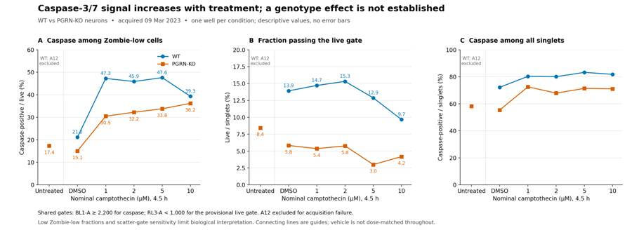
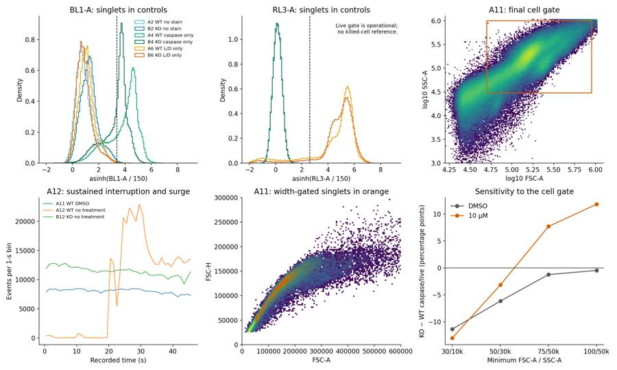
{"chunk_id":"5857b2","wall_time_seconds":0.000007967,"exit_code":0,"original_token_count":2754,"output":"file,well,issue_type,evidence,decision\nCaspase_WT_KO_optimization_caspase_Group_A2.fcs,A2,none,,keep\nCaspase_WT_KO_optimization_caspase_Group_A4.fcs,A4,none,,keep\nCaspase_WT_KO_optimization_caspase_Group_A6.fcs,A6,other,\"Only 33,328/249,507 singlets (13.36%) are Zombie-low at RL3-A < 1000; no validated live/dead reference is available. Retain as exploratory; low fraction alone is not evidence of technical failure.\",keep_with_note\nCaspase_WT_KO_optimization_caspase_Group_A7.fcs,A7,other,\"Only 24,523/253,721 singlets (9.67%) are Zombie-low at RL3-A < 1000; no validated live/dead reference is available. Retain as exploratory; low fraction alone is not evidence of technical failure.\",keep_with_note\nCaspase_WT_KO_optimization_caspase_Group_A8.fcs,A8,other,\"One timestamp restart of -3.909 s after 3,979 events (1.03% of file); omitting this prefix diagnostically changes caspase/live by +0.045 percentage points. Live gate contains 31,937/248,064 singlets (12.87%); viability is provisional. Retain all events with the shared gates for exploratory comparisons.\",keep_with_note\nCaspase_WT_KO_optimization_caspase_Group_A9.fcs,A9,other,\"Only 40,206/262,503 singlets (15.32%) are Zombie-low at RL3-A < 1000; no validated live/dead reference is available. Retain as exploratory; low fraction alone is not evidence of technical failure.\",keep_with_note\nCaspase_WT_KO_optimization_caspase_Group_A10.fcs,A10,other,\"Only 45,627/309,969 singlets (14.72%) are Zombie-low at RL3-A < 1000; no validated live/dead reference is available. Retain as exploratory; low fraction alone is not evidence of technical failure.\",keep_with_note\nCaspase_WT_KO_optimization_caspase_Group_A11.fcs,A11,other,\"Only 33,707/242,172 singlets (13.92%) are Zombie-low at RL3-A < 1000; no validated live/dead reference is available. Retain as exploratory; low fraction alone is not evidence of technical failure.\",keep_with_note\nCaspase_WT_KO_optimization_caspase_Group_A12.fcs,A12,clog,\"Acquisition interruption consistent with clog/flow failure: 2,824 events in 0-20 s (141.2/s) versus 207,899 in 20-32 s (17,324.9/s); three empty 1-s bins and maximum inter-event gap 1.745 s. Caspase/live shifts from 33.99% in 20-32 s to 39.26% in 32-46 s. Recovery means ran_dry is not established; exclude whole well, retain saved-gate counts for audit.\",exclude\nCaspase_WT_KO_optimization_caspase_Group_B2.fcs,B2,none,,keep\nCaspase_WT_KO_optimization_caspase_Group_B4.fcs,B4,none,,keep\nCaspase_WT_KO_optimization_caspase_Group_B6.fcs,B6,other,\"Only 17,587/270,484 singlets (6.50%) are Zombie-low at RL3-A < 1000; no validated live/dead reference is available. Retain as exploratory; low fraction alone is not evidence of technical failure.\",keep_with_note\nCaspase_WT_KO_optimization_caspase_Group_B7.fcs,B7,other,\"Only 14,936/357,363 singlets (4.18%) are Zombie-low at RL3-A < 1000; no validated live/dead reference is available. Retain as exploratory; low fraction alone is not evidence of technical failure.\",keep_with_note\nCaspase_WT_KO_optimization_caspase_Group_B8.fcs,B8,other,\"One timestamp restart of -4.388 s after 5,809 events (1.18% of file); omitting this prefix diagnostically changes caspase/live by +0.112 percentage points. Live gate contains 9,175/304,973 singlets (3.01%); viability is provisional. Retain all events with the shared gates for exploratory comparisons.\",keep_with_note\nCaspase_WT_KO_optimization_caspase_Group_B9.fcs,B9,other,\"Only 14,790/256,576 singlets (5.76%) are Zombie-low at RL3-A < 1000; no validated live/dead reference is available. Retain as exploratory; low fraction alone is not evidence of technical failure.\",keep_with_note\nCaspase_WT_KO_optimization_caspase_Group_B10.fcs,B10,other,\"Only 17,302/322,346 singlets (5.37%) are Zombie-low at RL3-A < 1000; no validated live/dead reference is available. Retain as exploratory; low fraction alone is not evidence of technical failure.\",keep_with_note\nCaspase_WT_KO_optimization_caspase_Group_B11.fcs,B11,other,\"Only 18,907/324,202 singlets (5.83%) are Zombie-low at RL3-A < 1000; no validated live/dead reference is available. Retain as exploratory; low fraction alone is not evidence of technical failure.\",keep_with_note\nCaspase_WT_KO_optimization_caspase_Group_B12.fcs,B12,other,\"Only 26,864/318,312 singlets (8.44%) are Zombie-low at RL3-A < 1000; no validated live/dead reference is available. Retain as exploratory; low fraction alone is not evidence of technical failure.\",keep_with_note\ncondition,wells,n_wells_used,mean,sd,metric_definition,normalisation_applied\nWT no stain | caspase_live_pct,A2,1,0.0704368438875719,,100 * caspase_positive / live,none\nWT no stain | live_pct,A2,1,99.99909697169458,,100 * live / singlets,none\nWT no stain | caspase_singlets_pct,A2,1,0.0704362078229342,,100 * caspase_all_singlets / singlets,none\nWT caspase only | caspase_live_pct,A4,1,71.51137271673439,,100 * caspase_positive / live,none\nWT caspase only | live_pct,A4,1,99.99962484993998,,100 * live / singlets,none\nWT caspase only | caspase_singlets_pct,A4,1,71.51147959183673,,100 * caspase_all_singlets / singlets,none\nWT L/D only | caspase_live_pct,A6,1,0.0780124819971195,,100 * caspase_positive / live,none\nWT L/D only | live_pct,A6,1,13.357541070991996,,100 * live / singlets,none\nWT L/D only | caspase_singlets_pct,A6,1,0.06292408629818,,100 * caspase_all_singlets / singlets,none\nWT 10uM camptothecin | caspase_live_pct,A7,1,39.31819108591934,,100 * caspase_positive / live,none\nWT 10uM camptothecin | live_pct,A7,1,9.66534106360924,,100 * live / singlets,none\nWT 10uM camptothecin | caspase_singlets_pct,A7,1,81.81664111366422,,100 * caspase_all_singlets / singlets,none\nWT 5uM camptothecin | caspase_live_pct,A8,1,47.62188057738673,,100 * caspase_positive / live,none\nWT 5uM camptothecin | live_pct,A8,1,12.874500128998967,,100 * live / singlets,none\n{\n \"question\": \"I
… [5,493 more characters not shown]tool call · exec
text(await tools.apply_patch("*** Begin Patch\n*** Add File: /task/outputs/validate_outputs.py\n+\"\"\"Validate requested schemas and independently reapply delivered GatingML.\"\"\"\n+from pathlib import Path\n+import json\n+import re\n+import numpy as np\n+import pandas as pd\n+import flowkit as fk\n+\n+OUT=Path('/task/outputs')\n+layout=pd.read_csv('/task/inputs/plate_layout.csv')\n+counts=pd.read_csv(OUT/'counts.csv',keep_default_na=False)\n+flags=pd.read_csv(OUT/'flags.csv',keep_default_na=False)\n+summary=pd.read_csv(OUT/'condition_summary.csv',keep_default_na=False)\n+answer=json.loads((OUT/'answer.json').read_text())\n+assert list(counts.columns)==['file','well','population','role','parent','count','pct_of_parent']\n+assert list(flags.columns)==['file','well','issue_type','evidence','decision']\n+assert list(summary.columns)==['condition','wells','n_wells_used','mean','sd','metric_definition','normalisation_applied']\n+assert len(flags)==18 and not flags.file.duplicated().any()\n+assert set(flags.file)==set(layout.file)==set(counts.file)\n+assert set(flags.issue_type)<=set(['none','clog','ran_dry','too_few_events','saturation','bad_control','mislabel','other'])\n+assert set(flags.decision)<=set(['keep','keep_with_note','exclude'])\n+assert set(counts.role)<=set(['cells','singlets','live','marker_positive','other'])\n+for _,r in flags.iterrows():\n+ if r.issue_type!='none': assert r.evidence and re.search(r'\\d',r.evidence)\n+assert not counts.duplicated(['file','population']).any()\n+populations=set(counts.population)\n+assert all(re.fullmatch(r'[A-Za-z][A-Za-z0-9_]*',x) for x in populations)\n+gs=fk.parse_gating_xml(str(OUT/'gates.xml'))\n+assert {name for name,path in gs.get_gate_ids()}==populations-{'all_events'}\n+regated=[]\n+for _,sample_row in layout.iterrows():\n+ df=counts[counts.file==sample_row.file].set_index('population')\n+ assert set(df.index)==populations\n+ assert set(df.well)=={sample_row.well}\n+ assert flags.set_index('file').loc[sample_row.file,'well']==sample_row.well\n+ s=fk.Sample('/task/inputs/raw/'+sample_row.file)\n+ result=gs.gate_sample(s)\n+ allrow=df.loc['all_events']\n+ assert allrow.role=='other' and allrow.parent=='none' and allrow.pct_of_parent==''\n+ assert int(allrow['count'])==s.event_count\n+ for role in ['cells','singlets','live','marker_positive']:\n+ assert len(df[df.role==role])==1\n+ assert counts[counts.role==role].population.nunique()==1\n+ for pop,r in df.iterrows():\n+ assert float(r['count']).is_integer() and r['count']>=0\n+ if pop=='all_events': continue\n+ assert int(r['count'])==result.get_gate_count(pop)\n+ p=int(df.loc[r.parent,'count'])\n+ assert 0<=r['count']<=p\n+ assert np.isclose(float(r.pct_of_parent),100*r['count']/p,rtol=0,atol=1e-10)\n+ report=result.report[result.report.gate_name==pop].iloc[0]\n+ assert r.parent==('all_events' if report.parent=='root' else report.parent)\n+ regated.append(dict(file=sample_row.file,well=sample_row.well,count_rows_verified=len(df)))\n+excluded=set(flags.loc[flags.decision=='exclude','well'])\n+assert excluded==set(answer['excluded_wells'])\n+assert not summary.condition.duplicated().any()\n+metric_pops={'100 * caspase_positive / live':('caspase_positive','live'),\n+ '100 * live / singlets':('live','singlets'),\n+ '100 * caspase_all_singlets / singlets':('caspase_all_singlets','singlets')}\n+for _,r in summary.iterrows():\n+ wells=r.wells.split(';')\n+ assert len(wells)==int(r.n_wells_used)>0\n+ assert not (set(wells)&excluded)\n+ assert np.isfinite(float(r['mean']))\n+ assert r.normalisation_applied=='none'\n+ num,den=metric_pops[r.metric_definition]\n+ values=[]\n+ for well in wells:\n+ d=counts[counts.well==well].set_index('population')['count']\n+ values.append(100*d[num]/d[den])\n+ assert np.isclose(np.mean(values),float(r['mean']),atol=1e-10,rtol=0)\n+ if len(wells)==1: assert r.sd==''\n+ else: assert np.isclose(float(r.sd),np.std(values,ddof=1))\n+assert len(answer['comparisons'])>=1\n+for c in answer['comparisons']:\n+ assert c['a'] in set(summary.condition) and c['b'] in set(summary.condition)\n+ assert c['direction'] in ['increase','decrease','no_clear_change']\n+ assert c['confidence'] in ['high','medium','low']\n+ assert re.search(r'\\d',c['magnitude'])\n+assert answer['overall_answer'].startswith(('yes:','partial:','no:'))\n+assert answer['assay_verdict'] in ['fit_for_purpose','needs_optimisation','not_fit_for_purpose']\n+assert answer['next_action'] in ['proceed_as_planned','repeat_unchanged','repeat_with_change','optimise_reagent_or_setting','change_treatment_or_timing','switch_assay','stop']\n+assert set(answer['next_change'])=={'what','from','to','why'}\n+assert all(isinstance(x,str) for x in answer['next_change'].values())\n+assert re.findall(r'^## .*$',(OUT/'report.md').read_text(),re.M)==['## Question','## Methods','## Results','## Conclusion','## Caveats','## Recommendation']\n+for filename in ['gates.xml','counts.csv','flags.csv','condition_summary.csv','figure.png','report.md','answer.json']:\n+ assert (OUT/filename).is_file() and (OUT/filename).stat().st_size>0\n+from PIL import Image\n+with Image.open(OUT/'figure.png') as im: im.verify()\n+validation=dict(status='PASS',n_files=18,n_populations=len(populations),n_count_rows=len(counts),n_summary_rows=len(summary),\n+ excluded_wells=sorted(excluded),checks=['Exact CSV schemas and allowed values','Complete file-by-population grid','Gate names and parent hierarchy','All counts independently reproduced from saved gates.xml','Percentages and summary means recomputed','Answer references and exclusions consistent','Report heading order','PNG integrity'],reapplied=regated)\n+(OUT/'validation.json').write_text(json.dumps(validation,indent=2)+'\\n')\n+print(json.dumps({k:v for k,v in validation.items() if k!='reappli
… [163 more characters not shown]tool output
Script completed
Wall time 1.2 seconds
Output:
{}
{"chunk_id":"fae728","wall_time_seconds":1.000447494,"session_id":10990,"original_token_count":0,"output":""}tool call · exec
text(await tools.write_stdin({session_id:10990,chars:"","yield_time_ms":1000,"max_output_tokens":2500}));
text(await tools.exec_command({cmd:"du -sh /task/outputs\npython - <<'PY'\nfrom pathlib import Path\nimport json\np=Path('/task/outputs')\nprint('Report words:',len((p/'report.md').read_text().split()))\nprint('Required deliverables:',[f for f in ['gates.xml','counts.csv','flags.csv','condition_summary.csv','figure.png','report.md','answer.json'] if (p/f).exists()])\nPY","max_output_tokens":1500}));
tool output
Script completed
Wall time 0.1 seconds
Output:
{"chunk_id":"81d00a","wall_time_seconds":0.000004154,"exit_code":0,"original_token_count":125,"output":"{\n \"status\": \"PASS\",\n \"n_files\": 18,\n \"n_populations\": 8,\n \"n_count_rows\": 144,\n \"n_summary_rows\": 51,\n \"excluded_wells\": [\n \"A12\"\n ],\n \"checks\": [\n \"Exact CSV schemas and allowed values\",\n \"Complete file-by-population grid\",\n \"Gate names and parent hierarchy\",\n \"All counts independently reproduced from saved gates.xml\",\n \"Percentages and summary means recomputed\",\n \"Answer references and exclusions consistent\",\n \"Report heading order\",\n \"PNG integrity\"\n ]\n}\n"}
{"chunk_id":"063173","wall_time_seconds":0.000004414,"exit_code":0,"original_token_count":43,"output":"4.7M\t/task/outputs\nReport words: 1910\nRequired deliverables: ['gates.xml', 'counts.csv', 'flags.csv', 'condition_summary.csv', 'figure.png', 'report.md', 'answer.json']\n"}24
agent
Completed all seven deliverables: [report](/task/outputs/report.md), [figure](/task/outputs/figure.png), [answer](/task/outputs/answer.json), [gates](/task/outputs/gates.xml), [counts](/task/outputs/counts.csv), [flags](/task/outputs/flags.csv), and [condition summary](/task/outputs/condition_summary.csv). Saved gates reproduce all 144 count rows.
**A reliable genotype effect is not established.** DMSO caspase positivity was lower in KO—15.1% versus 21.2% in WT among provisionally live cells—but replication, viability and gate sensitivity limit interpretation. A12 was excluded for acquisition failure.
**Next step:** validate and titrate Zombie NIR at 1:250, 1:500 and 1:1000 with known-live/dead references before proceeding to AAV rescue experiments.